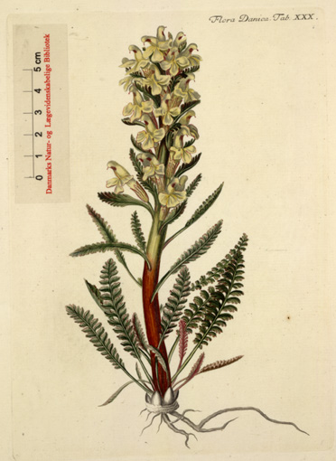

Andenken an Oeder
von
Gerhard Anton von Halem
Altona 1793
geb. 1752 gest. 1819
1770 Dr. jur. an der Universität Kopenhagen
1775 Assessor
1780 Kanzleirat
Herausgeber von Liederbüchern
Vorwort
Andenken an Oedervon
Gerhard Anton von Halem
Altona 1793
Übersetzt von
Ernst Willumsen
Frederiksberg 1985
Übersetzer's Vorwort
Der Name Georg Christian Oeder ist in Dänemark vor allem in zwei Zusammenhängen bekannt. Er war der Schöpfer und seit 1760 Initiator der Veröffentlichung des botanischen Prachtwerks "Flora Danica" und seit 1769 einer derjenigen, die in Schrift und Rede die Befreiung des Bauern vorbereiteten. Seine übrigen Tätigkeiten waren vielfältig und verschiedenartig, traten jedoch hinter diesen beiden zurück. Er hinterließ keine Tagebücher oder eine Art Autobiographie, als er 1791 starb; aber Gerhard Anton von Halem, der seit 1773 in engem Kontakt mit ihm stand und mit ihm zusammenarbeitete, hat in seinem Buch "Andenken an Oeder" ihm ein schönes Andenken gesetzt. Aber was ist der Grund dafür, dass ich fast 200 Jahre nach von Halems Buch von 1793 es ins Dänische übersetze?
Eine meiner Urgroßmütter erhielt bei ihrer Taufe im Jahr 1832 den Namen Caroline Mathilde Oeder. Das war eine deutliche Huldigung an die Königin, die Georg Christian Oeder so ritterlich 1772 verteidigte. Auch im Verhältnis zu Graf Struensee zeigte er erheblichen Mut; denn obwohl er ihn als Mensch wahrscheinlich nicht besonders mochte, bewunderte er Struensees fortschrittliche Aktivitäten und weigerte sich, gegen ihn auszusagen, während des Prozesses, der zu Struensees Verurteilung und Hinrichtung führte.
Die Folgen waren – wenn auch nicht katastrophal, so doch höchst unangenehm für Oeder selbst. Durch eine "vornehme" Ernennung wurde er von Dänemark nach Oldenburg versetzt, wo er die letzten 18 Jahre seines Lebens verbrachte. Dort erlebte er jedoch die Genugtuung, dass viele der Pläne, die er für Dänemark entworfen hatte, zum Wohle des kleinen Herzogtums ausgeführt wurden, wo er hoch angesehen war.
Beim Studium von Georg Christian Oeders Leben fand ich nicht unbedeutende Ähnlichkeiten mit meinen eigenen Interessen und Ansichten. Zum Beispiel haben sowohl Oeder als auch ich Pläne für eine koordinierte Ausbildung und eine daraus resultierende Zusammenarbeit auf Austauschbasis für ganz Europa vorgelegt – er für das botanische Gebiet in den 1760er Jahren, ich für die Versicherungsbildung in den 1950er Jahren.
Oeders Plan scheiterte damals trotz vieler Unterstützungsmaßnahmen; mein Plan gelang mit Hilfe aus der Schweiz, Deutschland und England und blüht nach mehr als 25 Jahren noch immer. Zufälligkeiten des Lebens führten dazu, dass ich, lange bevor ich Oeders Leben und Werk studierte, zunächst sieben Jahre lang in dem Pavillon in der Amaliegade, der zum Frederiks Hospital gehörte, arbeitete und täglich ein und aus ging, wo sich herausstellte, dass Oeder etwa zehn Jahre lang wohnte. Dann arbeitete ich 37 Jahre lang täglich im Bernstorffschen Palais, das von dem Mann gebaut und bewohnt wurde, der Oeder 1752 nach Dänemark rief – auch Oeder verkehrte dort. Mehrmals im Laufe der Jahre besuchte ich das Haus an der Ecke Stormgade und Frederiksholms Kanal (damals: Kalleboderne 287), wo Oeder seine letzten drei Jahre in Kopenhagen verbrachte.
Nachdem mein Interesse für ihn geweckt war, stand ich in der Kirche von Ansbach, wo er 1728 getauft wurde, besuchte das Haus seiner Großmutter in Feuchtwangen, wo er von seinem dritten bis zu seinem neunten Lebensjahr wohnte, und das Dekanatsgebäude in derselben Stadt, wohin sein Vater als Dekan und Stiftsprediger zog. Ich betrachtete das Haus in der Unteren Karspüle gegenüber der Universität Göttingen, in dem Oeders bewunderter Lehrer, Albrecht von Haller, wohnte und wanderte durch den Botanischen Garten, den Haller angelegt hatte und wo er seine botanischen Kenntnisse an seine Studenten weitergab.
In Oldenburg, wo Dänemark einst seine Königsfamilie herholte, habe ich in dem Supermarkt eingekauft, der jetzt dort steht, wo einst Rittergasse 16 war, das Haus, in dem Oeder und von Halem drei Jahre zusammenlebten, und betrachtete die Häuserreihe am Marktplatz, wo Oeder bis zu seinem Tod in einem der Häuser wohnte. Auf dem Friedhof außerhalb der Stadt steht bei der Kapelle am entlegensten Ende ein monumentaler Grabstein, gestaltet von Wiedewelt, auf dessen Rückseite von Halem einen schönen Text verfasst hat, der heute jedoch unleserlich ist, aber glücklicherweise aus Halems Buch bekannt ist.
Bei der Übersetzung von Halems Buch habe ich versucht, den Ton des 18. Jahrhunderts zu bewahren, ohne übermäßig Ausdrucksformen aus der damaligen dänischen Sprache zu verwenden. Ortsnamen, die im Buch fast alle in ihrer deutschen Form wiedergegeben sind, habe ich nach Möglichkeit in die örtliche Bezeichnung übersetzt.
Im Interesse späterer Leser der Übersetzung habe ich im zusammenhängenden Text des Buches (168 Oktavseiten) Abschnittsüberschriften eingefügt und diese zusätzlich zu einem ausführlichen Inhaltsverzeichnis verwendet, das tatsächlich einen "Lebenslauf" darstellt. Außerdem habe ich über die eigenen Anmerkungen des Buches hinaus, die jedoch nicht alle enthalten sind, einige kurze Darstellungen von Personen und Verhältnissen eingefügt, die für den modernen Leser von Nutzen sein könnten.
Zum Schluss möchte ich denen danken, die durch ihr Interesse, ihre Inspiration und Unterstützung meiner Arbeit mir Lust zur Übersetzung gegeben haben: Dies gilt für die Gartenarchitektin Vibeke Dahl, Hårlev, deren Urgroßvater Nicolaj Gotfred Oeder als Waise bei meinem Urgroßvater aufwuchs und ausgebildet wurde, während meine Urgroßmutter im Haushalt aufwuchs; es gilt auch für Lektor, cand. polit. Niels Bolwig, Århus, dessen Verbindung zur Familie Matthiessen in Altona Oeders einzige Tochter zu seiner entfernten Großtante machte; und schließlich Kancellist Lizzi Øder, die einzige im Kreis, die noch den Namen trägt – wenn auch in modernem dänisch geschrieben.
Nicht zuletzt danke ich meiner Frau für ihre Nachsicht mit meinen periodischen Abwesenheiten von unserem eigenen Jahrhundert und für ihre Teilnahme an meinen Reisen und Untersuchungen – sie hat in der Tat keine persönliche Verbindung zu dem Thema.
Die Übersetzung wurde in einigen Erholungswochen nach einer Grippe gegen Ende des Winters angefertigt.
Frederiksberg, im April 1985
Ernst Willumsen
Zur Erinnerung an Oeder
von
Halem
"Loquor aytem de homine, cui vivere
fuit cogitare Cic. tusc. V "
Hier handelt es sich um einen Mann,
für den Leben gleichbedeutend war mit Denken
ALTONA
BEI JOHANN FRIEDRICH HAMMERICH
1793
Einleitung
Es ist meine Absicht, auf die Laufbahn eines Mannes zurückzublicken, – eines Mannes, durch dessen Hilfe das menschliche Wissen und die menschliche Erkenntnis auf mehreren Gebieten vermehrt wurden, – eines Mannes, durch dessen Einsatz einer großen Bevölkerungsgruppe ein größeres Glück im Leben bereitet wurde, – eines Mannes, der es verdient, genannt zu werden: ein Wohltäter der Menschheit.Wer verweilt nicht gerne mit mir an diesem edlen Menschen Grab? Meine Begründung dafür, einen Kranz um die Urne des Verstorbenen zu flechten, liegt in der langjährigen Freundschaft, die mich mit ihm verband, liegt zugleich im Besitz einiger persönlicher schriftlicher Aufzeichnungen des Verstorbenen – und im Vertrauen, das mir seine würdige Witwe durch ihre Aufforderung entgegengebracht hat.
Ihr – vor allen anderen – widme ich diese Seiten.
Eltern, Geburt, Kindheit
Georg Christian Oeder, Edler von Oeder, war der dritte Sohn von Georg Ludwig Oeder, doctor theologiae und Dekan in Feuchtwangen im Fürstentum Onolzbach. Seine Mutter war Margrete Sybille, geborene Hamberger. Am 3. Februar 1728 wurde er in der Stadt Ansbach geboren, wo sein Vater zu dieser Zeit als Konrektor am Gymnasium tätig war. Bereits in seinem dritten Lebensjahr nahm ihn seine rechtschaffene Großmutter, die inzwischen Witwe des Dekans geworden war, zu sich nach Feuchtwangen und erzog ihn bis zu seinem neunten Lebensjahr, als sein Vater das Dekanat in Feuchtwangen übernahm und den Sohn wieder zu sich nahm. Zunächst ließ er ihn am öffentlichen Unterricht der örtlichen Lateinschule teilnehmen. Doch ab seinem zwölften Lebensjahr übernahm der Vater selbst die Ausbildung des Sohnes, bei dem sich bereits damals seine Vorliebe für Mathematik, Rechnen und Zeichnen zeigte. Zu Ostern 1746 war er in der Lage, an der Universität Göttingen aufgenommen zu werden.
Göttingen, die Universität
Die Medizin, die aufgrund ihrer vielfältigen Verbindungen zu verwandten Wissenschaften einen
immensen Reiz auf den
Forscher ausübt, schien seit Beginn seiner akademischen Laufbahn Gegenstand seines Studiums gewesen
zu sein.
In der Mathematik war Segner sein Lehrer. Bei Richter und Brendel nahm er medizinische Vorlesungen.
Doch sein
wichtigster Lehrer war Haller, dessen nahezu täglichen Unterricht er drei Jahre lang genoss. Unter
seiner Anleitung
studierte er auch Botanik, und Oeder versäumte nie die botanischen Exkursionen, die sein großer
Lehrer für seine Schüler
organisierte.
Der Umgang mit Haller nährte auch seinen Geschmack für die schönen Künste und führte ihn besonders
zum Studium der
englischen Sprache und Literatur, das ihn bis zum Ende seines Lebens faszinierte. Zu dieser Zeit
schrieb Richardson sein
Meisterwerk "Clarissa". Dieses Buch erschien nach und nach in Heften in Göttingen. Oeder erinnerte
sich oft in späteren
Jahren daran, mit welchem Vergnügen Haller es gelesen hatte und danach seine Freunde darüber
unterhielt. Nach der Szene
mit dem Schlaftrunk konnte Haller seine Unzufriedenheit mit dem Autor nicht verbergen. "Er hat sie
fallen lassen", rief
er aus, "und tatsächlich kann er sie nicht wieder erheben." Trotzdem hob er sie an. Im nächsten Heft
kam die
"Messer-Szene", und nun war die Bewunderung, die Haller dem Genie Richardsons erwies, umso größer.
Im Herbst 1749 erhielt Oeder seinen Doktortitel. Seine von ihm selbst verfasste Dissertation, die er
unter dem Vorsitz
von Professor Segner verteidigte, hatte den Titel: "De derivatione et rivulsione per venae
sectionem."
Schleswig und die Familie Ericius - Begegnung mit Bernstorff
Auf Anraten seines Landsmanns Camerer zog er als praktizierender Arzt nach Schleswig, wo ihm der
Zugang
zum Haus des
Etatsrats Ericius, dessen Söhne er in Göttingen kennengelernt hatte, seine erste Ehe ermöglichte.
Graf
Schmettau, der
zog. Bernstorff erkundigte sich weiter bei Haller und Oeders Glück war gemacht.
damals als General mit seinem Regiment in Schleswig stationiert war, schätzte den jungen Mann und
empfahl ihn wärmstens
Graf Bernstorff, der im Jahr 1751 als dänischer Außenminister und Obersekretär in der deutschen
Kanzlei
nach Kopenhagen
Bernstorff, der sofort nach der Bildung seines bemerkenswerten Ministeriums dessen Ruhm durch die
Aufnahme mehrerer
würdiger Gelehrter wie Klopstock, Cramer, Berger und vieler anderer vermehrte, bewies auch seine
Weisheit in der Wahl
der Talente durch die Anstellung Oeders. Die Zusammenführung all dieser Männer wird in der dänischen
Geschichte für
immer das Zeitalter von Friedrich V. im Bereich der Wissenschaften auszeichnen.
Ankunft in Kopenhagen
Die Disputation
Das Botanische Institut
An der Universität Kopenhagen fehlte ein botanisches Institut, und für dessen Errichtung sollte
Oeder
verantwortlich
sein. Nach den geltenden akademischen Gesetzen musste eine öffentliche Disputation der Ernennung zum
Professor
vorausgehen. Als Thema für diese wählte Oeder die Haller'sche Lehre von der Irritabilität, eine damals
neue Theorie.
Laut Expertenmeinung ist seine Disputation "de irritabilitate" eine der besten zu diesem Thema, obwohl
Haller nicht ganz
zufrieden damit war. Oeder hatte sich nämlich eigene Gedanken dazu gemacht, folgte Haller zwar, aber
nicht blindlings.
Die öffentliche Verteidigung der Disputation verlief jedoch nicht besonders erfolgreich. Oeder war nicht
besonders
geschickt im Disputieren, vor allem im Vergleich zu seinem Zeitgenossen, dem Physikus auf Fünen, Dr.
Eichel. Die
Disputation verlief so negativ für ihn, dass die Regierung es nicht ratsam fand, ihn sofort an der
Universität
anzustellen.
Stattdessen wurde er zum königlichen Professor ernannt. Das 1752 auf königliche Kosten gegründete
botanische Institut
wurde unabhängig von der Universität, und die Leitung wurde allein Oeder unter der Direktion von Graf
Moltke anvertraut.
Es war jedoch vorgesehen, dass das Institut mit der Zeit mit der Universität vereint werden sollte.
Allein die Tatsache,
einem "Fremden" diese Aufgabe zu übertragen – unabhängig von seiner Unerfahrenheit im Vorlesungsbetrieb
– und die
Universität zu übergehen, sowie dass all dies unter dem unmittelbaren Schutz des Hofes geschah, stellte
von Anfang an
die Universität gegen das neue Institut und schuf Oeder viele Gegner.
Trotzdem verlief das Unternehmen erfolgreich. Der botanische Garten wurde in der Nähe der Zollstation
und am Eingang zum
Hafen angelegt. Man begann auch, eine Bibliothek und eine Sammlung naturhistorischer Seltenheiten
aufzubauen.
Schließlich wurde Oeder Anfang des Jahres 1754 zum Professor für Botanik an der Universität Kopenhagen
ernannt, und ein
Jahr später begann er seine botanischen Reisen durch die dänischen Staaten zur Sammlung für "Flora
Danica".
Botanische Reisen – insbesondere in Norwegen
Er begann seine Reisen in Norwegen, einem Land, das er sehr zu schätzen wusste und über das er
später mit großer
Begeisterung sprach, wenn sich die Gelegenheit bot.
Im ersten Jahr, 1755, erkundete er die Umgebung von Christiania und Kongsberg. Im Jahr 1756 reiste
er durch das
Gudbrandsdal, über das Dovrefjell nach Trondheim; von dort über Røros zurück nach Christiania. Im
dritten Sommer war er
im Bistum Christiansand (an der Küste) beschäftigt, sowohl auf der einen als auch auf der anderen
Seite von Lindesnes.
Zudem durchquerte er das Gebirge Heckfjell und Telemarken. Im Sommer 1758 reiste er entlang der
Küste von Stavanger,
durch das Bistum Bergen nach Trondheim; und im Sommer 1759 besuchte er einen Teil des Nordlands bis
Rana.
Sein ganzes Leben hindurch konnte er nicht genug loben, welche Bescheidenheit, gepaart mit
Gutmütigkeit und gesunder
Vernunft, er insbesondere bei den norwegischen Bauern gefunden hatte.
Der reisende Botaniker hat, mehr als jeder andere, die Gelegenheit, die Psyche einer Nation zu
studieren, die Mängel
ihres Zustands zu erforschen, die innere Natur des Rechtssystems zu untersuchen, die Erwerbsquellen
und ihre Hindernisse
zu erforschen sowie die Sitten und Gebräuche im Allgemeinen zu beobachten – er sieht, wie sich die
Dinge zeigen und wie
man alles im Vorbeigehen erfassen muss.
Sein Status als Forscher und Gelehrter verschafft ihm Zugang zu den Häusern der Vornehmen und
verschafft ihm
Vertrautheit bei gebildeten Personen aller Stände. Doch seine Aufgabe führt ihn auch oft von den
ausgetretenen Pfaden
weg, wenn er in der Notunterkunft einer Armutshütte Zuflucht suchen muss.
Für diesen Mann, der kein abschreckendes öffentliches Stempel trägt, sondern sich lediglich auf die
Pflanzen am Feld
konzentriert, öffnen sich ohne Zurückhaltung sowohl das Herz des Landwirts als auch das der Bürger;
das des Armen wie
das des Reichen; das des Lehrers wie das des Gewerbetreibenden; und der Betrachter hat schließlich –
neben dem schönen
Wissen über Kräuter und Blumen – auch das noch schönere Wissen über den Menschen gewonnen.
Volkswirtschaftliche Berichte
Ein solcher Betrachter war Oeder. Rousseau, der Menschenforscher, wurde am Ende seines Lebens auch
Pflanzenforscher.
Oeder erlangte während seiner Suche nach Pflanzen Wissen über Menschen und Völker.
Aber er erwarb nicht nur dieses Wissen; er nutzte es auch zum Wohle des Staates – des Staates, dem er
seine Arbeit
gewidmet hatte.
Über seine botanischen Arbeiten, die später in der „Flora“ zum Ausdruck kommen sollten, konnte er seine
Gönner,
Bernstorff und Moltke, nur in geringem Maße informieren. Deshalb sandte er ihnen zusätzlich
Reiseberichte und
politisch-ökonomische Betrachtungen über Norwegen, die die Minister umso willkommener finden mussten, da
sie das Land
nur durch die Finanzabteilungen und deren Jahresberichte kannten und ansonsten nur wenig über die
besonderen Bedürfnisse
dieses Landes informiert waren.
So schilderte er beispielsweise die Möglichkeit zur Verbesserung des Gesundheitswesens, die
Getreidepreise, die
Entwicklung der Landwirtschaft in den Bergregionen, das Straßenwesen, den Nutzen der Aufhebung des
norwegischen
Odelrechts (Erbrecht und Erstgeburtsrecht), das die Bevölkerung als Hindernis für die Entwicklung
belastete; er gab die
Aussage eines norwegischen Bauern wieder, dass es in Norwegen erst gut aussehen würde, wenn die Wälder
gerodet seien
(!); er berichtete über viele Unternehmungen, die Aufmerksamkeit und Unterstützung von nordischen
Bürgern, Kaufleuten
und anderen vermögenden Personen verdienten.
Ebenso berichtete er bei einer Gelegenheit über einen wirtschaftlichen Bericht (vom Udsterns-Klosterhof)
über die
norwegische Landwirtschaft und deren Verbesserung, mit besonderem Augenmerk auf Pachtgüter,
Gemeindewaldungen und
Rodungswesen.
Ich erwähne ausdrücklich die konkreten Dinge, über die er schrieb, und über die Handschriften vor mir
liegen.
Auch wenn sie größtenteils möglicherweise zu lokal geprägt sind, um ein größeres und besonders deutsches
Publikum zu
interessieren, so wird doch der dänisch-norwegische Patriot, der hiermit über die Verhältnisse
informiert ist,
vielleicht den Wunsch haben, sein Wissen zu vertiefen und zu erfahren, wie ein Denker wie Oeder den
Zustand seines
Heimatlandes beurteilte.
Schilderung von Norwegen – auch geologische
Oeders Reiseberichte enthalten jedoch auch allgemein interessante Abschnitte und Beiträge zum
philosophischen
Verständnis eines Landes.
Ich erlaube mir, einen Abschnitt zu zitieren:
„In der Provinz Stavanger, im Bistum Bergen und im Nordland, allgemein entlang der Nordsee, gibt es
viele Gletscher oder
Gebiete, die mit ewigem Schnee bedeckt sind; im Landesinneren sind sie jedoch nur klein oder
seltener. Der
Jostedalsbreen erstreckt sich durch sieben Kirchspiele in drei Amtbezirken und kommt an einer Stelle
dem Meer bis auf
eine halbe Viertelmeile nahe. Der Grund für das Vorhandensein dieser Gletscher ist nicht, dass die
Berge am Meer höher
sind als die im Landesinneren; vielmehr ziehen die Seiten der Berge, die dem Meer zugewandt sind,
ständig die vom Meer
kommenden Nebel und Wolken an, wodurch aufgrund der hohen Feuchtigkeit der Schnee in einen Zustand
zwischen Schnee und
Eis gebracht wird. Ich wurde davon deutlich überzeugt, als ich in den letzten Tagen des Juni 1757
quer über Heckfjell
und die Langfjellene von OSO und WNW reiste. Auf der Ostseite gab es nur wenig Schnee, aber sobald
ich den höchsten
Punkt des Berges überschritten hatte und der Weg wieder abwärts führte, war fast alles mit Schnee
bedeckt.“
„Wer sich mit den vielen ‚Kosmostheorien‘ über den Ursprung der Berge usw. beschäftigen möchte, kann
folgende Tatsache
berücksichtigen, die ich in anderen Beschreibungen von Bergen nicht gelesen zu haben glaube: Die
höchsten Berggipfel im
Landesinneren bieten keine feste Felsformation, sondern eine ‚konvexe‘ Fläche, die überall mit losen
Bruchstücken oder
großen Steinen aller Formen und in allen möglichen Stellungen sowie mit kleinen Steinen,
Steinbrocken und Geröll bedeckt
ist, sodass man keinen festen Halt findet.
Eine Bresche einer eingefügten Mauer kann im Kleinen eine Vorstellung vom Anblick der Felsenspitzen
geben.
Diese Spitzen sind völlig kahl, und man findet kaum eine Handvoll einer bestimmten Art von
Alpengrün, obwohl rund um den
Bergrücken am Fuß einer solchen Spitze Pflanzen dicht wachsen. Diese ‚Rudera‘, wenn ich sie so
nennen darf, sind sicher
nicht nur die Wirkung der Schwerkraft, wie es bei einem Absturz von einem steilen und überhängenden
Felsen der Fall
wäre. Man kann sich nichts anderes vorstellen, als dass sie durch eine innere Erschütterung und eine
von innen nach
außen wirkende Kraft entstanden sind.
Wer Gefallen an Alexander Moros’ System findet, könnte sich leicht vorstellen, dass die Spitze des
Grindfjell in Valdres
wie der ‚Kessel‘ eines erloschenen Vulkans ist, obwohl ich sonst keine Spuren von einem Brand
bemerkt habe – keine Lava
oder Ähnliches.“
„Eine andere Merkwürdigkeit sind bestimmte große Steine, so groß wie kleine Häuser, die man lose auf
dem Berg liegen
sieht, hier und da, auf Flächen, wo keine Bergspitzen in einer halben Meile Entfernung zu finden
sind, von denen ein
solcher Stein heruntergerollt sein könnte.“
„Es gibt in Norwegen keinen Beweis für die Ansicht, dass der Meeresspiegel im Verhältnis zum
Festland sinkt, was in
Schweden in unserer Zeit viel diskutiert wird. Giske in Sunnmøre und Tjøtta in Helgeland werden in
der alten nordischen
Geschichte erwähnt. Sie sind heute noch nur wenig über dem Meeresspiegel erhoben und müssten
notwendigerweise noch höher
erhoben sein, wenn die celsianische Auffassung richtig wäre. Im Übrigen gibt es in keinem Land
bessere Möglichkeiten als
in Norwegen, der Nachwelt ein Denkmal zu hinterlassen, nach dem all diese Streitigkeiten ein für
alle Mal beigelegt
werden könnten. Man könnte nämlich in einem der sogenannten ‚Tiefrender‘, wo die Berge zu allen
Seiten steil emporragen,
z. B. am Ende des Lysefjords (im Ryfylke), eine Linie auf eine solche Felswand ziehen und sie durch
Einkerbung dauerhaft
machen, was unauslöschlich wäre, und damit die aktuelle Höhe des Wassers mit Veränderungen bei Ebbe
und Flut und in den
verschiedenen Jahreszeiten angeben.“
„Der Anblick, den man im Inneren einer solchen Bucht wie dem Lysefjord hat, ist beeindruckend. Man
kann sich einen Berg
vorstellen, den man weit draußen im Meer im Profil sieht. Man denkt sich nun, dass man am Fuß dieser
Profil-Sektion in
einer tiefen Schlucht steht. Ungefähr in dieser Situation befindet man sich, wenn man in dem
genannten Fjord aus dem
Boot steigt, um den Berg hinaufzusteigen. Die Felswände an den Seiten der tiefen Schlucht stehen
völlig senkrecht, das
Wasser selbst ist nur ein paar Gewehrschüsse breit, die Öffnung der Schlucht zum Himmel ist nicht
viel breiter; die
Ränder kann man nicht überblicken, ohne sich flach auf den Rücken zu legen. Hinzu kommen die
Dunkelheit und das Rauschen
der Bäche, die von den Felswänden herabstürzen. Es ist ein schauerlicher Aufenthaltsort.“
Nun gut, wir müssen uns losreißen, um zum Hauptziel der Reise zurückzukehren: der Sammlung von
Pflanzen.
Botanisieren
Michael und Martin Rössler
Die Entstehung der Flora Danica
Die frisch gesammelten Pflanzen zeichnete Oeders Begleiter, Martin Rössler, vor Ort. Dessen Vater,
Michael Rössler,
stach die Zeichnungen in Kupfer, und so erschien im Herbst 1762 das Werk „Flora Danica“ in Heften (mit
je 60
Kupferstichen pro Heft). Dieses Werk war damals einzigartig und wurde von Kennern als ein wahrer Schmuck
für unser
Jahrhundert gelobt.
Hinweis: Zehn Hefte schuf er allein. Aber auch in den folgenden Heften stammen viele Abbildungen von
ihm.
Im Jahr 1766 waren zwei Bände mit 360 Kupferstichtafeln vollendet. In Deutschland wurde dieses Werk
ebenso geschätzt wie
die Arbeiten eines Natters, Willes oder Winkelmanns. „Früchte deutschen Bodens“; wenn es wie hier zur
Vollkommenheit
gelangt ist, was macht es dann, dass es in einem fremden Land geschieht?
Nicht nur hatten deutsche Gebiete diesseits der Eider, bei der Elbe und der Weser ihren Beitrag zu den
gezeichneten
Pflanzen geliefert; und nicht nur war das Werk sowohl auf Deutsch als auch auf Dänisch und Latein
erschienen, – es war
auch ganz und gar von deutschen Händen geschaffen. Es war die Frucht der mühevollen Reisen eines
Naturforschers, – eines
Forschers, der beiden Nationen Ehre gemacht hat, sowohl der, die ihn ausgebildet hat, als auch der, die
ihn belohnt hat.
Der richtige Weg, Pflanzen kennenzulernen, ist die Beobachtung in der Natur selbst.
Aber selbst wenn wir uns dazu hingezogen fühlen, wie viele Bekanntschaften müssen wir entbehren, weil
wir sie einfach
nicht in unserer Nähe fanden.
In getrockneten Pflanzen findet man nicht immer die Natur, ihre Verwendung ist auch nur von kurzer
Dauer.
Beschreibungen sind für einen Meister der Kunst auch nicht immer ausreichend. Es ist nicht leicht, die
„gedachten“
Zeichen in ein Fantasiebild zu verwandeln und die in der Beschreibung zersplitterten Teile einer Pflanze
zu einem Ganzen
zusammenzufügen.
Aber ein zuverlässiger Stich, verbunden mit einer genauen Beschreibung, ist ein Gewinn für Kenner und
Amateure. Mit
Hilfe der Beschreibung bekommt der Stich eine Stimme und bringt selbst seine kleinsten, fast
unsichtbaren Teile zur
Aufmerksamkeit des Betrachters. Durch den Stich wird die Beschreibung verkörpert und fügt sich zu einem
Bild zusammen.
„Hätte man,“ sagt Oeder daher mit Recht, „seit der Erfindung des Buchdrucks und der Kupfertafeln von
Anfang an mehr
Abbildungen statt unvollständiger Beschreibungen gebracht, hätten Botaniker größtenteils das mühsame
Ringen mit der
Synonymie erspart. Es gäbe weniger Grund, über die Menge an Namen zu klagen. Das Wissen über
Vegetabilien wäre weiter
verbreitet, und in Bezug auf das Wissen um den Nutzen der Pflanzen wäre mehr erreicht worden.“
Technik des Kupferstichs
Die Kupferstiche sind auf eine nicht ganz übliche Weise schraffiert, ohne Kreuzschraffuren, sodass sie
bei der
Kolorierung die Farben „tragen“ können, aber auch ohne diese auskommen. Da die meisten Abzüge schwarz
sind, ist der
Stich für diese Schatten und Details mit einem Grabstichel ausgearbeitet. Die Zeichnung, selbst in den
kleinsten
Details, ist genau, sauber und ansprechend, die Farbe von ausgesuchter Schönheit. Die Pflanzen, selbst
die
Alpenpflanzen, sind nach frischen, lebenden Exemplaren gezeichnet. Ein seltenes Vorrecht! Aber es ist
notwendig, wenn
man die Natur nach der Natur ausdrücken will, dass man, wo eine Pflanze ihrer natürlichen Wuchsweise
überlassen wurde,
deren freien Stand, die volle Gestalt, den Ausdruck der vielfältigen Teile und insbesondere die
spezifische Zeichnung
des Naturprodukts an seinem Wuchsort abbildet. Dies ergibt eine freie, vollständige Zeichnung, die nicht
nur die
Umrisse, sondern auch den Körper, die Substanz und die Oberfläche der Pflanze ausdrückt!
Soweit die kurze Beschreibung dessen, was Oeder durch „Flora Danica“ geleistet hat. Es ist ein Werk, um
dessen willen
spätere Zeiten seinen Namen bewahren werden; auch ist sein Nutzen nicht nur lokal oder an bestimmte
Gebiete gebunden.
Die dänischen Staaten umfassen ein langes Stück Land, von der Elbe bis zum Eismeer, vom 53. bis zum 70.
Breitengrad –
der Boden ist unendlich verschieden und wichtig für die Vielfalt der Bergpflanzen sowie der Strand- und
Meerespflanzen.
Kenner haben in den ersten beiden Bänden 68 Arten gezählt, die nicht in Linnés „Flora Suecica“ zu finden
sind.
Weitergehende botanische Pläne – für ganz Europa
Die dänische „Flora“ soll vier Fünftel der englischen und fünf Sechstel der norddeutschen Pflanzen
enthalten. Hier
beginnt sich die eigentliche Aufgabe über die dänischen Staaten hinaus auszudehnen, und ein größerer
Teil Nordeuropas
kann lokalen Nutzen aus dem Werk ziehen. Oeders großer Plan war, dass die „Flora Danica“ die
europäische
Flora bis etwa
20 Grad nördlicher Breite umfassen sollte, und an diese erste Flora sollten sich dann zwei oder drei
südlichere Floren
anschließen, um auf diese Weise ganz Europa in einer botanischen Übersichtskarte zusammenzuführen,
wie
Zimmermann später
eine solche für die Zoologie erstellte.
Damit das Land, für das das Werk in erster Linie bestimmt war, es leichter nutzen konnte, verteilte die
Regierung 55
Exemplare in den dänischen Staaten an vertrauenswürdige Personen, bei denen jeder Untertan es sehen und
den Reichtum
seines eigenen Landes kennenlernen konnte.
Während der Veröffentlichung dieses wichtigen Werkes verfasste Oeder zudem auf Latein und Deutsch eine
„Einleitung zu
der Kräuterkentniss“. Kenner schätzten auch in diesem Werk seinen philosophischen Geist, bewunderten
seine besondere,
nachdenkliche Schreibweise und lobten seine Bescheidenheit, die sich darin zeigte, dass er erst nach
einer Analyse
anderer bekannter Methoden seine eigene Methode aufstellte. In der deutschen Ausgabe drückte er alle
Fachbegriffe
selbstverständlich auf Deutsch aus, was man nur von einem Mann erwarten konnte, der vollständiges Wissen
über die
Materie und Sprachkenntnisse besaß und kein Sklave seiner Vorgänger war.
Dieses Werk von Oeder fand auch im Ausland so viel Anklang, dass Gouan in Montpellier es als Grundlage
für seine
regulären Vorlesungen verwendete und dass man es in Edinburgh zu demselben Zweck heranzog. Im Jahr 1765
wurde er als
korrespondierendes Mitglied in die wissenschaftliche Gesellschaft in Montpellier aufgenommen. Schon
vorher war er
korrespondierendes Mitglied der wissenschaftlichen Gesellschaft in Göttingen gewesen.
Seine letzte botanische Arbeit war ein Verzeichnis der zur „Flora Danica“ gehörenden wilden Pflanzen; es
erschien in den
Jahren 1769 und 1770 gleichzeitig auf Latein und Deutsch.
Bewertung von Oeders wissenschaftlichem und sprachlichem Beitrag
Die Oederschen Beschreibungen charakterisiert ein Kunstkritiker (Lebensmedikus Filip Gabriel Hensler,
gestorben 1805),
dessen Urteil ich früher gefolgt bin, mit folgenden Worten:
„Ohne mit vielen Fachausdrücken um sich zu schlagen, ist so viel wahre Philosophie der Kunst darin
enthalten; so viel
feine kritische Gelehrsamkeit findet man darin verstreut; (und dennoch hat man die Natur betrachten
können, wie sie nie
zuvor gesehen wurde), es ist so viel von der vollen, wunderbaren und eigenartigen Natur dargestellt; das
Beobachtete ist
so konzentriert und passend in Worten ausgedrückt, die nicht selten neu klingen und immer glücklich
gewählt sind, – auf
diese Weise hat das botanische Wissen durchweg gewonnen.“
„Oeder,“ so fährt dieser feine Kritiker weiter fort, „Oeder hat die bisher beste Methode (die Linnésche)
alle Ehre
erwiesen, er hat sie benutzt und – sie verlassen. Ein kluger Kenner meinte, dass Oeder, um Gehör für
seine eigenen Werke
zu finden, entweder sich an seine Vorgänger hätte binden oder einen Aufschrei gegen sie hätte erheben
müssen. Aber er
scheint sich nicht sklavisch darauf einzulassen, auf anderen Feldern zu weiden, und er scheint zu großen
Respekt vor dem
wirklichen Verdienst zu haben, um sich der tadelnden Schelte hinzugeben, einer Methode, die sich gewisse
neuere
Botaniker geradezu als ihre 'Tonart' angeeignet haben, obwohl sie jederzeit nach Linnés Krücke griffen.
Von einem mittleren Standpunkt aus machte er große Fortschritte in Richtung eines Naturensystems und kam
diesem
tatsächlich näher als jeder seiner Vorgänger.“
Ermutigt durch die Minister Bernstorff und Moltke, setzte Oeder seine Berichterstattung über Finanzen
und andere
staatliche Wissenschaften fort, und nach 1760 wuchs sein Wunsch, auf diesen Gebieten tätig zu werden.
Über die Volkswirtschaft Norwegens
Oeders Berichte wurden zunehmend bedeutend, insbesondere hinsichtlich der Analyse der
wirtschaftlichen und sozialen
Bedingungen Norwegens. Er war überzeugt davon, dass die Landwirtschaft in Norwegen unter den
gegebenen Umständen ihr
maximales Potenzial erreicht hatte und dass weitere Fortschritte nur durch Stärkung der bürgerlichen
Berufe erzielt
werden könnten.
In einem seiner Berichte sagt er: "Norwegen ist meiner Meinung nach dichter besiedelt als Dänemark,
wenn man
unbestelltes Land an einem Ort mit unbestelltem Land an einem anderen vergleicht. Man muss Norwegen
und ähnliche bergige
Länder mit eigenen Augen gesehen haben, um vollständig zu verstehen, wie wenig von dem Land
bewirtschaftet wird."
"Wenn ich in unseren dänischen Regionen Dörfer mit Namen wie 'Städte' und Bauern mit Namen wie
'Bürger' finde und wenn
ich die berühmten handwerklichen Fähigkeiten der norwegischen Bauern bei der Herstellung ihrer
eigenen
Haushaltsgegenstände, Werkzeuge und Kleidung betrachte, ist dies für mich ein Beweis für ein
ungünstiges System in
beiden Königreichen. Ich glaube, dass 'Städte' in Dänemark von der Möglichkeit bürgerlicher Berufe
und städtischer
Lebensgrundlagen ausgeschlossen sind, und dass die norwegischen Bauern von Städten mit
professionellen Handwerkern in
der Nähe profitieren würden."
"Nordland beginnt etwa 20 Meilen von Trondheim entfernt und erstreckt sich bis Finnmark über eine
Strecke von 70 bis 80
Meilen und beherbergt fast 50.000 Menschen. Dieser gesamte Bezirk ist kommerziell mit den Städten
Bergen und Trondheim
verbunden; die größten Handelsverbindungen bestehen zu den entfernteren und bergigen Gegenden, so
dass die
nächstgelegenen Gebiete von Nordland 70 und die entferntesten 120 bis 130 Meilen entfernt liegen.
Auf einer solchen
Reise vergeht ein bis zwei Monate des kurzen Sommers, und das Land verliert in dieser Zeit einige
seiner besten Männer,
die für die Landwirtschaft von großer Bedeutung sind."
"Der wesentliche Teil der Produkte Nordlands besteht aus Fisch, einem Produkt, das durch
Verzögerungen in der
Verarbeitung und im Verkaufsprozess erheblich an Wert verliert, ebenso wie der Preis durch die
Anzahl der Vermittler,
durch die das Produkt geht, erhöht wird."
"Aus diesen Überlegungen ergibt sich bereits die Notwendigkeit einer Stadt speziell für diese
Nordland-Regionen.
Gleichzeitig könnte diese Stadt das beste Zentrum für den Handel mit Island, den Färöern und
Finnmark sowie für den
Handel mit einem Stapelplatz (Entrepot-Handel) nach Archangelsk werden."
"Island ist ursprünglich eine norwegische Kolonie. Natürlich sollte die Tochter sich an die Mutter
halten. Von den
Nordland-Gebieten aus ist die Überfahrt über das Meer nur halb so lang wie der Weg nach Kopenhagen,
der zweifellos zu
weit entfernt ist, um als Stapelplatz für den isländischen Handel zu dienen. Der Handel mit Island
sollte daher frei
gemacht werden, und die Insel sollte nicht länger der Wettbewerbsfähigkeit beraubt werden, die in
einem freien
Wettbewerb liegt. Zumindest könnte man zuerst einen Hafen frei machen und ein kleineres Magazin für
staatliche Kosten
als Vorsorge für den Fall einer Notlage lagern, falls der Handel und die Lieferungen nicht wie
gewünscht verlaufen."
"Wenn jemals der Plan zur Gründung dieser Stadt in Nordland in die Tat umgesetzt werden sollte,
würde nach Oeders
Meinung die Gegend um die Mündung des Flusses Ranen und Wessen in Betracht gezogen werden. 'Ihre
Einrichtung', sagte er,
'kostete eigentlich nichts anderes als den Willen dazu, Hindernisse zu beseitigen und den Menschen
zu erlauben, die
Gaben der Natur nach ihrem besten Wissen und Gewissen zu nutzen. Hier - wie bei Hunderten anderer
Vorhaben - ist es eine
Wahrheit, dass eine Regierung ohne Kosten, nur durch Beseitigung moralischer und politischer
Hindernisse, unendlich mehr
zur Förderung des menschlichen Unternehmungsgeistes beitragen kann als durch kostspielige
Hilfsmaßnahmen.'"
"Zu der Zeit, als der derzeit regierende König den Thron bestieg (1766), wurden Oeders politische
Vorschläge auf
Anregung von Bernstorff häufiger."
"Seine Überlegungen erstreckten sich über mehrere Themen und verschiedene Zweige der
Staatsverwaltung, einschließlich
der Finanzen."
Die militärische Seite der Gesellschaft zu jener Zeit.
Das dänische Militärwesen entging zumindest nicht seiner Aufmerksamkeit.
In einem besonderen Memorandum kritisierte er die veränderten Maßnahmen, die seit 1763 auf diesem
Gebiet ergriffen
worden waren, und sagte laut: 'Die erste Sorge, die ein Staat anstreben muss, ist es, seine Existenz
in Bezug auf seine
Nachbarn auf seinen eigenen inneren Kräften zu gründen. Jede Nation, die nur zahlreich genug ist, um
eine Nation genannt
zu werden, kann diese Unabhängigkeit beanspruchen. Die Natur hat dem dänischen Staat seine
natürliche Grenze zwischen
der Trave und der Elbe gewiesen, und diese kann mit 70 bis 80.000 Mann verteidigt werden - (nicht
mit 30.000, wie unsere
Generäle uns einreden wollen).
Diese Stärke kann die Nation innerhalb der Landesgrenzen suchen - und finden.
Die nationalen Kräfte müssen vorrangig sein, die angeworbenen Truppen nur eine Nebensache; denn mit
ihnen kann nichts
erreicht werden, egal wie viel oder wenig man sich darauf stützt. Wenn die Bauern in Norwegen 30.000
Soldaten aufstellen
können, dann müssen die Bauern in Dänemark und seinen deutschen Ländern proportional 45, 40 oder
zumindest auch 30.000
Mann stellen können. Ihre Ausbildung hängt vom Willen und Fleiß der Offiziere ab. Das Beispiel der
Seestreitkräfte
beweist die Möglichkeit, dass man in den Landstreitkräften ebenso gut mit eigenen Kräften helfen
kann. Die Verteidigung
des Vaterlandes ist kein zu teurer Bürger, und auch wenn genügend fremde Hände für Dänemark
beschafft und bezahlt werden
können, sollte man dennoch die eigenen Kräfte im Reich nutzen. Ein Hauptfehler bei der bisherigen
Einrichtung der
Nationalarmee besteht darin, dass die einmal bei der Armee angestellten Offiziere sich dort fürs
Leben niederlassen,
anstatt dass der Dienst in der Armee ein Weg zur Beförderung sein sollte, etwas, das die Offiziere
in der Nationalarmee
nur als selbstverständlich angesehen haben ..... usw.'
Dennoch fühlte Oeder, und er drückte es auch bereits in dieser Abhandlung aus, dass die Situation
der dänischen Bauern
eine wesentliche Hürde für eine solche Ordnung wäre."
Der Stand und die Entwicklung des Bauerntums.
Die Untersuchung der Situation der Bauern und der Mittel zu ihrer Verbesserung erregte damals
allgemeine
Aufmerksamkeit.
Oeders Verdienste zeigen sich hier in schönstem Licht, und die Angelegenheit selbst ist so wichtig
für
jeden wahren
Menschenfreund, dass es eine angenehme Pflicht ist, sich der Geheimnisse der Ungerechtigkeit
anzunähern,
nämlich dass
das Bauerntum so lange von der vorgesehenen Verbesserung beraubt war, für denjenigen, der das Leben
jenes Mannes
beschreibt, der den ersten Lichtstrahl in dieses Dunkel warf.
Um sich ein klares Bild von der Lage der Bauern in Dänemark zu machen, muss man zwischen drei
verschiedenen Zeiträumen
unterscheiden.
Der erste lange Zeitraum dauert bis zur Regierungsänderung unter Frederik III (1660), in dem das Volk
den Aristokraten
unterworfen war, die auf wenig Widerstand stießen, und in dem auch der Bauernsohn an seinen Geburtsort
gebunden war.
Das zweite Zeitintervall erstreckt sich von dieser Regierungsänderung bis 1702, als Frederik IV. durch
eine Verordnung
die Leibeigenschaft aufhob, um - wie es in der Verordnung heißt - "mehr Lust, Mut und Interesse an der
Arbeit zu
schaffen und damit auch eine größere Tätigkeit zu ermöglichen, und damit sie, wenn sie sehen, dass sie
und ihre Kinder
in Zukunft das Land besitzen können, für das sie arbeiten, darin größere Anreize finden, ihr Leben für
König und
Vaterland zu riskieren."
Der dritte Zeitraum reicht von dieser Verordnung bis in unsere Tage; eine Zeit, die die Wahrheit
bestätigte, dass selbst
die gut gemeinten Verordnungen ohne jede Wirkung blieben, ja sogar oft schädlich wurden, wenn Staat und
Volk nicht durch
vorbereitende Maßnahmen ausreichend darauf vorbereitet waren, die Güter anzunehmen, die ihnen zugedacht
und geplant
waren. Gemäß Frederik IVs schöner Verordnung sollte der Bauer frei sein; dies setzte jedoch voraus, dass
der Bauer sich
auf seinem Land glücklich fühlte und dass der ausgezeichnete Wohlstand ihn durch seine eigene Wahl an
seine Heimat
bindet. Aber wie konnte der Bauer dieses Gefühl des Wohlstands besitzen?
Die Landwirtschaft befand sich in einem äußerst elenden Zustand. Das mit Abgaben belastete Land hatte
keinen Wert, und
um der unerträglichen Last der Steuern zu entgehen, wurden ganze Höfe dem König überlassen. Die
Bauernsöhne verließen
den Hof ihres Vaters und ihre Heimat und zogen dorthin, wo sie hingezogen wurden. Natürlich hatte dies
einen schädlichen
Einfluss auf die Verteidigung des Staates. Man verzeichnete eine beträchtliche Abwanderung in der
Landmiliz, die sich
weiter verschlimmerte, als der Dienst des Landsoldaten, der bisher einen Verteidiger in seinem Herrn und
Gutsherrn
gefunden hatte, durch das willkürliche Handeln der Offiziere verschlechtert wurde, indem sie die
Landsoldaten
eigenmächtig den angeworbenen Regimentern überließen. Beschwerden über diese Zwangsmaßnahmen erreichten
Christian VI. Er
wollte es gut machen und hob 1730 die Landmiliz vollständig auf. Er glaubte, dass nun jeder Mann im
Reich sein Glück
preisen und sich mehr ermutigt fühlen würde, das Vaterland zu verteidigen. Gerade weil dieses "Glück"
fehlte, führte die
Aufhebung dazu, dass die dänischen Bauern noch häufiger den Pflug verließen, die Höfe verwaist dalagen
und das Land
seine schlagkräftige Armee verlor.
Christian sah sich bereits 1731 gezwungen, die Landmiliz wieder aufzustellen.
Es folgten eine Reihe von Verordnungen, die die Dienstzeit festlegten, bis schließlich die Verordnung
vom 13. April 1764
das Recht des Gutsbesitzers über seine Leute so festlegte, dass diese bereits ab dem Ende ihres vierten
Lebensjahres
gesetzlich unterworfen waren und die Bauern somit vom vierten bis zum vierzigsten Jahr in der Rulle
verbleiben sollten.
Auf diese Weise wurde die Freiheit, die Frederik IV. für das Bauerntum vorgesehen hatte, vernichtet.
Denn wer kann als
frei bezeichnet werden, wenn er von seinem vierten Lebensjahr bis zum vierzigsten an seinen Geburtsort
gebunden ist -
also während der gesamten Zeit, in der ein Mensch sesshaft werden sollte?
Man sieht deutlich, dass eine Verbesserung des Wohlstands der Bauern die große Bedingung für die
Freiheit ist. Aber wie
dieser Wohlstand am zweckmäßigsten gefördert und mit dem Interesse der Gutsherren und der
Verteidigungsbereitschaft des
Staates vereinbart werden könnte, war das große Problem, das die Meinungen in den Jahrzehnten teilte,
als Oeder die
königlichen Länder als Botaniker bereiste.
(Anmerkung: Vergleichen Sie Etatsråd Thyge Rothes "Den danske bonde", von dem ein interessanter Auszug
im Kielischer
Magazin, Seite 111 und 194, Band 2, veröffentlicht wurde.
Als Einleitung dienen die wahren Worte von Arthur Young: "Oft schreibt man dicke Bücher, die voller
guter Ratschläge für
die Landwirtschaft sind, anstatt sich viel eher mit politischen Grundsätzen zu beschäftigen. Zu
berichten, wie man in
England mit größtem Nutzen Rüben, Kohl, Karotten, Luzerne, Klee und ähnliche Produkte anbaut, und dies
den Landwirten zu
erzählen, die mit ihrem Lager für die französische Bauernsteuer bezahlen müssen, die sie verpflichtet,
jedes zehnte
Stück ihrer Produkte abzuliefern - dies den Landwirten in einem Land zu erzählen, in dem der Export von
Produkten
verboten ist, wo jedoch der Import erlaubt ist, oder wo die Armut so groß ist, dass der Landwirt keinen
Markt für seine
Waren finden kann; was sind all diese guten Ratschläge, wenn nicht leichtsinnige Verhöhnungen der
allgemeinen
Menschenvernunft!)
Graf Moltke veranlasste Oeder, den er aufgrund seiner anderen Schriften für einen Denker hielt, dieses
Problem ebenfalls
ins Licht zu rücken. Oeder tat dies mit seinem gewohnten Scharfsinn und seiner Unerschrockenheit."
Überlegungen zur Freiheit und Eigentum der Bauern 1769
Seine 'Überlegungen zu der Frage: Wie können Freiheit und Eigentum dem Bauernstand in Ländern
verschafft
werden, in
denen beides fehlt?' haben, wie sowohl Freund als auch Feind zugeben müssen, ein Zeitalter
eingeleitet
und den Weg für
die folgenden Untersuchungen bereitet, denen der dänische Bauer in den folgenden Jahrhunderten
seinen
größeren Wohlstand
verdankt.
'Man muss', sagt Oeder, 'sich mit einer strengen Unparteilichkeit bewaffnen, um sich durch die
Diskussion dieses
Problems einen Weg zwischen den gegensätzlichen Meinungen zu bahnen. Auf der einen Seite die
Despotie
der Gutsherren,
die um des Vergnügens willen herrschen wollen, ihre Mitbürger zu beherrschen, als ob es ein
"majestätisches Recht" wäre,
in ängstlicher Besorgnis, dass der Bauerstand auf ihre Kosten gewinnen könnte; veraltete Vorurteile,
die
keinen anderen
Zustand für möglich halten als den einmal eingeführten.
Auf der anderen Seite: Unbegründete Anschuldigungen gegen die Gutsherren, als ob ihr Widerstand jedes
Wohl verhindern
würde; fromme Wünsche, ohne zu wissen, wo die Fehler wirklich liegen, eine Ungeduld, die alles mit
Gewalt durchsetzen
will und Überlegungen keine Zeit zum Reifen gibt.'
Seine Meinung in der Sache selbst war, dass der Zustand, in dem der Bauer sein eigenes Land
bewirtschaftet, dem
bisherigen Zustand vorzuziehen ist, in dem er ohne Eigentum arbeitet und mit eingeschränkter Freiheit.
'Daher glaube ich', sagte er, 'dass der Zustand der Landwirtschaft in einem Staat am besten sein wird,
wo das Land
vollständig in Parzellen aufgeteilt ist, die nicht größer sind, als dass sie von ihren Bewohnern ohne
Frondienst
bewirtschaftet werden können; wo jeder Bewohner eine solche Parzelle als sein Eigentum betrachten und
entsprechend
behandeln kann; und wo die Rechte der höheren Stände auf bestimmte Abgaben für diese Parzellen
festgelegt sind. Je
weiter oder näher ein Staat von diesem Zustand entfernt ist, desto weniger vorteilhaft wird er sein, ja
vielleicht sogar
schädlich.
Aus diesem Zustand ergibt sich eine größere Bevölkerung, und mit dieser Bevölkerung entwickeln sich alle
glücklichen
Konsequenzen: Die Entwicklung der bürgerlichen Berufe, eine sicherere Verteidigung - und ein Ansehen und
eine Macht für
den Staat, die auf diesen beiden Umständen beruht. Ich halte es auch für möglich, diesen gewünschten
Zustand in jedem
Staat zu erreichen, wo die Anwesenheit größerer Güter ein Hindernis darstellen sollte, durch deren
Auflösung, ohne dass
die Besitzer solcher Güter einen Verlust erleiden würden, weder in Macht und Ehre noch in Einkommen oder
Zukunftssicherheit: - aber nicht durch Zwang und Gewaltmittel, - insgesamt nur allmählich, Stück für
Stück. Daher würde
ich auch den Fürsten, der selbst Landbesitz in einem solchen Staat hat, in seiner Eigenschaft als
"Landesherr" dazu
raten, den Weg für eine schriftlich festgelegte Bestimmung der Frondienste zu ebnen (indem er diese
empfiehlt), und in
seiner Eigenschaft als Grundbesitzer für seine Ländereien selbst ein Beispiel zu geben.'
'Die Bevölkerung', fuhr er fort, 'muss mit der Landbevölkerung beginnen, die drei Viertel der dänischen
Nation ausmacht.
Der Bauer hat eine ausgezeichnete Neigung, Kinder zu zeugen, die ihm bei der Bewirtschaftung des Landes
helfen können.
Kolonien gedeihen selten und erfolgreich, und Fabrikindustrien können nur den Pflug ersetzen - (auch
nicht leicht
entstehen) - bevor das Land seine überflüssigen, arbeitslosen Hände anbietet. Die Frondienste sind
schädlich und
zerstören den Bauern, ohne dem Herrn viel zu nutzen. Der Verlust an Zeit ist immer erheblich bei der
Frondienstarbeit
und ist furchtbar dort, wo die Frondienste übertrieben und willkürlich auferlegt werden. Ganze Tage
werden als nichts
angesehen, und der Bauer gewöhnt sich daran, sie als nichts zu betrachten. Er wird zu vielen Dingen
gezwungen, die die
Landwirtschaft nicht betreffen. Hunderte von Dingen geschehen zu ungelegener Zeit, und der Bauer, der
immer zur
Verfügung stehen muss, wird oft von der Arbeit auf seinen eigenen Feldern weggezogen, an Tagen, an denen
es für ihn
wichtig ist, sich um sie zu kümmern. Bei der Frondienstarbeit wird niemals dieselbe Arbeit in derselben
Zeit ausgeführt,
die dieselben Hände leisten könnten, wenn sie von der Neigung beseelt wären, die Freiheit und
Selbstinteresse bieten.
Die gegenwärtige Landwirtschaft widerspricht der Entwicklung der Bevölkerung selbst, indem sie als
Grundsatz festlegt,
dass so viel Land wie möglich mit so wenig Händen wie möglich bewirtschaftet werden soll. Die
Dorfgemeinschaft macht
allein die Hälfte des Landes zur Wüste.'
So äußerte er sich wiederholt leidenschaftlich dagegen, dass der Staat seine Sicherheit und Verteidigung
auf eine
stehende Armee stützt, die immer angeworben ist und im Notfall oft unzureichend und - zumindest in Bezug
auf ihre
gewöhnlichen Soldaten - unzuverlässig ist.
'Warum sollte der Staat nicht viel eher seine Bürger bewaffnen, die sich in Friedenszeiten selbst
ernähren können und
nur im Krieg zur Last fallen? Warum nicht über eine Institution nachdenken, in der sie ebenso geschickt
zur Verteidigung
ihres Vaterlandes werden, wie sie es in Bezug auf ihren Willen und ihre Treue sind?
Schließlich entwickelt er seinen Vorschlag zur Steigerung des Wohlstands näher. Der Grundbesitzer
sollte, so rät er,
selbst einen angemessenen Teil des Landes und des Waldes unterhalten - den Rest sollte er gegen eine
Grundrente
(Grundsteuer) an freiwillige Landwirte abgeben und in angemessene Parzellen aufteilen, die ein
landwirtschaftlicher
Helfer bewirtschaften konnte. Für Bürger, Helfer und andere, die sich freiwillig melden, könnte der Herr
dann
Gelegenheit finden, ihnen dieses Stück Land zu überlassen, und da er keinen Kaufpreis erhält, müsste er
für diese
vollständige Sicherheit haben. In Bezug auf die Landsteuer könnte der Fürst den Grundbesitzer befreien
und sich an den
neuen Bauern halten. Er sollte also selbst das Beispiel auf seinen Krondomänen geben; er könnte gemäß
seinen Befugnissen
die willkürliche Frondienstarbeit verbieten und den Umfang der Frondienste bestimmen.
Die Steuer sollte dann in Form der Früchte des Landes gezahlt werden und nicht in Geld, da sie sonst im
Laufe von ein
paar hundert Jahren von keiner Bedeutung mehr wäre.
Dies ist die Skizze eines Essays, der durch seinen klaren, festen Blick auf das Ganze gleichzeitig die
außergewöhnliche
sachliche Beherrschung und Bescheidenheit seines Autors verrät."
Veröffentlichung der "Bedenken..." auf Deutsch und Dänisch
Ursprünglich war die Betænkning nicht für den Druck gedacht, aber Oeders Erwartung (gemäß Moltkes
ursprünglicher
Aussage) war, dass er das Manuskript dem König persönlich überreichen würde (obwohl es sich vom
später
gedruckten Text
unterschied). Die Betænkning war jedoch nicht ganz so ausgefallen, wie Moltke es gewünscht hätte.
Der
Minister trat
zurück, und Oeder wurde eine Gabe von 100 Dukaten angeboten, um ihn für seine Mühe zu entschädigen.
Auf
diese Weise
wollte man ihn dazu bringen - nicht nur die Gabe edelmütig abzulehnen, sondern auch das Schriftstück
nun
zu
veröffentlichen. Im Jahr 1769 ließ er es, wenn auch anonym, drucken und widmete es dem König.
(Veröffentlicht in
Frankfurt und Leipzig 1769 O.A.)
In Deutschland, wo diese Ideen bereits bekannt waren, wurde das Werk mit verdientem Applaus
aufgenommen.
In Dänemark
sorgte es für großes Aufsehen und wurde ins Dänische übersetzt. (Übersetzer war Berthold Joh. Lodde,
Veröffentlichungsjahr 1769. O.A.)
Die großen Gutsbesitzer waren äußerst unzufrieden. Sie waren der Meinung, dass sie ein starkes Interesse
daran hatten,
die Leibeigenschaft nicht abzuschaffen. Ihre Bauern waren sozusagen ihre Dienerschaft und gehörten nur
durch sie dem
Staat. Die Abschaffung der Leibeigenschaft, so glaubten sie, würde diese Bindung lösen; die volle
Souveränität über die
Bauern würde sofort auf die Regierung übergehen, folglich würde die Struktur der Landwirtschaft und
damit auch ihr
großer Einfluss in Regierungsangelegenheiten ihre stärkste Stütze verlieren. Nun wurde die
Leibeigenschaft als das
größte Kleinod des Adels gepriesen, und es wurde wiederholt betont, dass die Abschaffung nur darauf
abzielte, den Adel
zu unterdrücken und damit den aktuellen Zustand auf dem Land zu destabilisieren.
Offiziell führte man eine andere Sprache. Man wünschte sich, dass die Abschaffung der Bindung zwischen
Gutsherren und
Bauern als Auflehnung gegen die Souveränität angesehen würde.
"Der Verfasser der Betænkning," hieß es, "wird eine Freiheit zugeben, die selbst in den freiesten
Staaten undenkbar ist.
Es fehlt nur noch, dass die Begriffe für Grafschaft, Baronien und Herrenhäuser (gemäß dem Vorschlag des
Autors) aufhören
zu existieren, dann wäre man vollständig republikanisch."
Dies veranlasste Oeder im Jahr 1770, das "Tillæg til betænkningen" zu schreiben, das dann 1771 gedruckt
wurde und mit
dem herrlichen Zitat von Plinius versehen war: "Verum fatentibus latifundia perdidere Italiam, jam vero
et provincias."
Um die Wahrheit zu gestehen, waren die großen Landgüter das Verderben Italiens, und nun geht es den
Provinzen nicht
besser.
Dieses Zusatzwerk betrachtete Oeder, wie er mehrmals betonte, als sein bestes Werk. Tatsächlich enthielt
dieses kleine
Buch - neben vielen näheren Definitionen früherer Aussagen - eine detailliertere Anwendung der Gedanken
auf Dänemark
sowie eine Widerlegung einiger Einwände, die gegen ihn erhoben wurden.
"Es ist unbillig," sagt er, "wenn man die schlechte Wirtschaftlichkeit, Dummheit, Eigensinn und
Widerspenstigkeit der
Bauern als Grund dafür anführt, die Leibeigenschaft beizubehalten. Es ist ungerecht, wenn man die
Konsequenzen der
Unterdrückung dem unterdrückten Menschen zur Last legt."
Unter anderem richtete er seinen Blick auf die anderen europäischen Staaten und wies darauf hin, dass
Großbritannien am
besten als Vorbild für Dänemark und die Herzogtümer dienen könnte, aufgrund der ähnlichen Lage an und um
das Meer herum,
der ähnlichen Beschaffenheit des Bodens mit geringen klimatischen Unterschieden und aufgrund der
ähnlichen
sozioökonomischen Grundlagen, die in beiden Ländern in Landwirtschaft und Viehzucht bestehen.
"England befindet sich in einem blühenden Zustand ohne Frondienste und ohne Herrenhöfe. Es hat einen
angesehenen und
reichen Adel, der mit Glanz und Freude von seinen Gütern lebt. All dies ist uns bekannt, und dennoch
heißt es
unaufhörlich: Was wird aus dem Adel, wenn die Herrenhöfe abgeschafft werden?" usw. (Anmerkung: Rezension
in einer
Hamburger Zeitschrift 1771: "Die Kritik enthält ausgezeichnete Anmerkungen und muss von einer sehr
kenntnisreichen
Person stammen. (Ich habe dies geschrieben, da ich den Leibarzt Hensler für den Autor hielt.)")
Die Volkszählung 1769, bearbeitet von Oeder
Jedoch - genug zu diesem Thema. Ich gehe nun zu einer anderen Aufgabe über, die Oeder zu Beginn des
Jahres 1770
übertragen wurde. Am 15. August 1769 fand in allen königlichen Staaten Europas eine allgemeine
Volkszählung statt. Die
dabei eingegangenen Listen wurden auf königlichen Befehl vom Rentekammer am 18. April 1770 an Oeder
übergeben, damit er
die Ergebnisse dieser Listen zusammenstellen, darüber nachdenken und einen Plan zur Organisation
zukünftiger
Volkszählungen vorlegen konnte. Die Bearbeitung der Listen war so aufwendig, und Oeder wurde bald in so
viele andere
Aktivitäten involviert, dass er erst im Jahr 1772 dem Rentekammer die Ergebnisse vorlegen konnte. Da
dieser Bericht, der
gleichermaßen wichtig für die dänische Statistik und für politische Arithmetik ist, nun in Heinzes
"Samlung zur
Geschichte und Staatswissenschaft", Göttingen 1789, abgedruckt ist, kann das Publikum auch hier seine
Fähigkeit im
Umgang mit Zahlen und seine erstaunliche Fleiß bewundern.
Einige der bedeutenderen Ergebnisse sind wie folgt:
Die Bevölkerung der dänischen Staaten beträgt höchstens 2.100.000.
Dänemark, soweit es aus Inseln besteht, ist dichter besiedelt als Schleswig, - Schleswig besser
besiedelt als Holstein,
- aber Oldenburg besser als alle genannten Landesteile.
Die Bevölkerung in Dänemark und seinen deutschen Nebenländern zusammen hat eine Durchschnittsbevölkerung
von 1305 pro
Quadratmeile... usw.
*) Das dänisch-norwegische Königreich
Über Lotterien
Unter seinen offeneren Bemerkungen trifft sein patriotischer Eifer auch die Thematik der
Zahlenlotterien: "Alle guten
politischen und moralischen Gründe," sagt er, "vereinen sich gegen diese schädliche Erfindung, die
eine Schande für die
menschliche Vernunft ist. Die gesamte Zahlenlotterie ist ein "jeu de dupe" (Narrenspiel), bei dem es
überhaupt kein
Verhältnis zwischen dem großen Risiko der Spieler und der geringen Wahrscheinlichkeit eines Gewinns
für sie gibt. Der
Urheber dieses großen, weit verbreiteten Übels ist es, dass so viele gewöhnliche Menschen von den
rechtmäßigen Wegen und
Möglichkeiten zur Einkommenserzielung abgebracht werden, weg von Fleiß und Sparsamkeit, und
stattdessen mit der
Vorstellung erfüllt werden, dass sie durch Faulheit ohne Arbeit glücklich werden können, eine
betrügerische Denkweise,
und verführt werden, nach "unehrlichem Geld" zu streben."
Bei dieser Gelegenheit behandelte er auch (wie später im MUSEUM beschrieben) die kaum zuverlässige
Methode, das
geografische Ausmaß oder die Fläche eines Landes durch Ausschnitte und Vermessung von partiellen
Landkarten zu
bestimmen.
Die Aufhebung des botanischen Instituts
Schon im Jahr 1770 wurde Oeders botanische Arbeit durch die Aufhebung des botanischen Instituts
beendet. Bereits in
seinen letzten Jahren wollte Friedrich V. das Institut dem Universität übergeben, mit einem
jährlichen Zuschuss von 3000
Talern aus seiner privaten Kasse. Doch der tief verwurzelte Groll war stark genug, dass die
Universität dieses
königliche Geschenk ablehnte. Stattdessen arbeitete man an der Einrichtung eines neuen botanischen
Gartens direkt an der
Universität, obwohl es sowohl an Platz als auch an inneren Ressourcen mangelte, um den Plan
umzusetzen. Gerade im Jahr
1770 ging man soweit, beim König um Unterstützung für das neue Universitätsinstitut zu bitten. Das
von Oeder geleitete
Institut war inzwischen so weit fortgeschritten, dass der kleinere der beiden Gartenabschnitte, der
von einer Landstraße
durchschnitten wurde (das äußerste Ende der Amaliegade), vollständig fertiggestellt und bepflanzt
war, während der
größere Teil, der näher am Zollhaus lag und erst mit erheblichen Kosten aufgefüllt werden musste, so
weit gebracht
wurde, dass er nun ebenfalls mit Pflanzen versehen werden sollte.
Genau zu diesem Zeitpunkt plante man einen Handelshafen in Kopenhagen zu errichten; dafür sollten
Lagerhäuser in der
Nähe des Zollhauses gebaut werden, und zu diesem Zweck konnte der größere Teil des botanischen
Gartens Platz machen. Es
hieß, die Universität werde jedoch einen völlig neuen Garten haben; das wiederholte Angebot einer
Zusammenlegung des
Instituts in seiner jetzigen Form wurde abgelehnt, stattdessen gab man der Universität den
kleineren, vollständig
eingerichteten Garten, dazu einen bescheidenen jährlichen Zuschuss (es wurden 300 Taler), und die
Universität war
zufrieden! Die private Kasse hatte damit eine Ausgabe gespart, und der Handel hatte Platz für
Lagergebäude gewonnen.
Oeder beschwerte sich zwar darüber, dass man ein Institut, das er zu Recht sein eigen nennen konnte,
aufgab und ihn
selbst unter den Trümmern der eingestürzten Mauern begrub. Man antwortete ihm, dass er für andere
Aufgaben verwendet
werden solle.
Durch eine königliche Resolution vom 9. Juni 1770 wurde das botanische Institut aufgehoben, und in
Bezug auf Oeder wurde
hinzugefügt:
dass er, der das bisherige Institut ruhmreich und zur Zufriedenheit seiner Majestät geleitet hatte
und für andere
Aufgaben von seiner Majestät bestimmt worden war, in königlichen Diensten bleiben und sich in erster
Linie mit der
"Flora Danica" beschäftigen sollte, und daher sein Gehalt wie bisher behalten werde.
Struensee taucht auf
Zu diesem Zeitpunkt hatte der spätere Graf Struensee bereits großen Respekt gewonnen, und das damalige Ministerium stand kurz vor dem Fall. In Traventhal, wohin der Hof im Juni reiste, wurde dieser Fall schließlich endgültig beschlossen.
Vaccination von Hornvieh
Während dieser Zeit erhielt Oeder von der alten, schwankenden Regierung, insbesondere vom Ökonomie-
und
Handelskollegium, den Auftrag, die Versuche zur Vaccination von Hornvieh zu überwachen, die zu
dieser
Zeit stattfanden.
Der Ort, der für diese Versuche gewählt wurde, war die kleine Insel Avnø an der Südküste von
Seeland,
zwölf Meilen von
Kopenhagen entfernt.
Am 1. August 1770 machte sich Oeder auf den Weg nach Avnø. Nachdem er die Insel inspiziert und eine
Karte davon
angefertigt hatte, unterteilte er sie in bestimmte Bereiche, die er durch Zäune und Gräben
voneinander
trennte. In einem
Bereich blieb das gesunde Vieh bis zur Impfung; in einem anderen befand sich das gerade geimpfte
Vieh,
bis die Impfung
anschlug; im selben Abschnitt befand sich auch das Vieh, das als geheilt befunden wurde; der dritte
Bereich war für das
kranke Vieh vorgesehen, das in zwanzig Holzhütten untergebracht war, jede mit zwei Stücken Vieh.
Die Impfung erfolgte nach der Methode von Camper, und eine genauere Beschreibung davon findet sich in
"Geschichte der
Impfung" von Hofmedikus Rode und in Oeders eigener Beschreibung, wie sie im MUSEUM wiedergegeben ist.
Der erste Versuch, der zur besten Zeit des Jahres unternommen wurde, war erfolgreich, da zehn von zwölf
Stücken Vieh
geheilt wurden. Die sieben folgenden Versuche waren jedoch weniger erfolgreich, besonders diejenigen,
die später im Jahr
durchgeführt wurden. Einmal wurden zwei von sechs Stücken behalten, ein anderes Mal nur eines von
sieben, und einmal
keines von acht. Oeder schob dies größtenteils auf die fortgeschrittene Jahreszeit und empfahl aus guten
Gründen die
Fortsetzung der Versuche, obwohl er die Impfung als unzuverlässig ansah.
Tatsächlich wurden die Versuche in den Jahren 1771 und 1772 fortgesetzt, und nach Angaben von Rode aus
dem Jahr 1772
fiel nur ein einziges von 160 geimpften Stücken Vieh durch.
Während Oeder auf Avnø war, wurde in Kopenhagen die große Veränderung im Ministerium durchgeführt, die
in Traventhal
beschlossen worden war.
Oeders Scharfsinn, seine Geschäftstüchtigkeit, seine unermüdliche Fleißarbeit, seine Abneigung gegen
jegliche Intrigen
und seine Rechtschaffenheit waren alles Eigenschaften, die ihn der alten Regierung empfohlen hatten.
Die neue Regierung verdient Anerkennung dafür, dass sie auch diese seltenen Verdienste anerkannte. Oeder
war bereits,
ohne es selbst zu wissen, in die Liste in Traventhal aufgenommen worden, die Personen auflistete, die
bevorzugt
eingesetzt werden sollten.
In einem Memorandum an den König hatte Oeder den Standpunkt vertreten, dass, obwohl es in seinem 43.
Lebensjahr früh
genug sei, um eine neue Lebensbahn einzuschlagen, es gleichzeitig höchste Zeit sei, und er daher wissen
wolle, welche
Absicht man mit ihm habe und für welche Aufgaben er bestimmt sei.
Mitglied des General-Landwirtschaftskollegiums
Bernstorff schlug vor, dass Oeder Mitglied des General-Landvæsenskollegiums sein sollte, und er
erwirkte eine königliche
Resolution, nach der Oeder zum Kommissar im Kollegium ernannt wurde.
Bernstorff selbst sowie Moltke und Konferenzrat Schumacher, in seiner Eigenschaft als
Geheimschreiberssekretär,
informierten ihn darüber, und Oeder wartete nun auf Avnø auf das weitere Ergebnis. Im Oktober kam er
für eine kurze Zeit
nach Kopenhagen, genau an dem Tag, als Bernstorff die Stadt verließ. Von ihm und Schumacher erfuhr
er, dass die
königliche Resolution über seine Berufung in das General-Landvæsenskollegium bereits zweimal in
Traventhal dem König zur
Unterschrift vorgelegt worden war, aber er sich geweigert hatte zu unterzeichnen mit den Worten,
dass "dafür immer Zeit
sein würde, wenn man nach Dänemark zurückkehrt".
Mit dieser sehr undurchsichtigen Trost kehrte Oeder zu seinen Kühen auf dem Land zurück, wo er seine
Arbeit bis zum 12.
November fortsetzte, bedrückt und besorgt um seine Zukunft.
Denn er kannte nichts von Struensee. Das alte Ministerium war gefallen, und niemand außer Schumacher
war übrig
geblieben.
Deshalb wandte er sich an ihn, als er am 12. November nach Kopenhagen zurückkehrte. Als er
Schumachers Büro betrat, traf
er dort einen seiner Mitarbeiter, der gerade dabei war, ein Paket mit Arbeit aus dem Kabinett für
Oeder vorzubereiten.
Dieses Paket enthielt Anweisungen.
Der König hatte durch ein Rundschreiben vom 16. Oktober 1770 eine beträchtliche Anzahl von
Geschäftsleuten in allen
seinen Reichen aufgefordert, Personen, die ihm alle empfohlen worden waren, ihre Gedanken über
Handel und Wandel
vorzubringen.
Die Memoranda, die bereits aus diesem Kreis eingegangen waren, und weitere, die folgen würden,
wurden auf königlichen
Befehl von Schumacher an Oeder geschickt, mit der Aufforderung, nicht nur Auszüge daraus zu machen,
sondern diese auch
mit eigenen Anmerkungen zu versehen.
Diese Aufgabe gab Oeder gleichzeitig Anlass und Befugnis, sich zu fast allen Teilen der
Staatsverwaltung zu äußern.
"In diesen meinen Schriften", sagt Oeder in einem hinterlassenen Manuskript, "diese meine Schriften,
die zweifellos von
der Untersuchungskommission der Struenseeschen Papiere neben anderen aus meiner Hand gefunden und
untersucht wurden,
schäme ich mich sicher nicht; und wenn die Kommission Struensee dazu veranlasst hat, mich
hervorzuheben, so haben diese
Schriften ihm auch nützlich sein können, und damit auch dem Staat, insofern jede Information, die an
einen Mann
gerichtet ist, der Macht in den Händen hat, auch für den Staat nützlich sein wird."
General-Landwirtschaftskommission - Festlegung der Frondienste in Dänemark 1771
Am 19. November 1770 wurde Oeder in die General-Landwirtschaftskommission eingeführt, die das
General-Landwirtschaftskollegium ablöste, und hier blieb er, bis er in das Finanzkollegium eintrat.
"Ich hatte das Vergnügen," schreibt er, "in voller Einigkeit mit fünf weiteren Kollegen, darunter
der bereits erwähnte
Schumacher, zu arbeiten. Es ist allgemein bekannt, dass mir ein größerer Anteil an dem zugeschrieben
wird, was geschehen
ist, als ich mir selbst mit Recht zuschreiben kann, ohne meine würdigen Kollegen zu vernachlässigen.
Die von Seiner Majestät genehmigte Anweisung für diese Kommission stammt aus meiner Hand, und ich
übernehme gerne meinen
bescheidenen Teil der Verantwortung für die Verordnung vom 20. Februar 1771 zur Festlegung der
Frondienste in Dänemark,
die nur für diejenigen anstößig sein kann, die keine Grenzen für ihren Machthunger kennen.
Die Arbeit in der General-Landwirtschaftskommission und die Kommentare zu den Memoranden der
Kaufleute brachten Oeder in
näheren Kontakt mit Struensee, durch dessen Hände damals alle Angelegenheiten gingen. Bis dahin war
seine Bekanntschaft
mit ihm nur oberflächlicher Art und erstreckte sich nicht über die Grenzen der Höflichkeit und des
Lebensstils hinaus.
Ja, Oeder war im Gegenteil zurückhaltend gegenüber einem Mann, der das Ministerium geleitet hatte,
dessen Klient er
gewesen war. Schumacher vermittelte ihm jedoch mehr Vertrauen.
Ernennung zum Finanzrat
Oeder befand sich weiterhin an seinem früheren Arbeitsplatz als Professor für Botanik. Die
Mitglieder der
Landwirtschaftskommission erhielten keine Bezahlung. Oeder wünschte eine endgültige Entscheidung
über sein Institut und
wandte sich mündlich an Struensee. Dieser fand seinen Wunsch berechtigt.
"Ein Arbeiter ist seines Lohnes wert", sagte er, und durch einen Kabinettsbefehl vom 5. Januar 1771
wurde Oeder zum
Finanzrat ernannt. Seine Position sollte so verstanden werden, dass er zwar weiterhin an der Arbeit
an "Flora Danica"
beteiligt sein sollte, seine Hauptaufgabe jedoch die Wirtschaftspolitik sein würde, und er sollte
entsprechende Aufgaben
übernehmen. Sein Gehalt wurde auf 1200 Rigsdaler festgesetzt, zuzüglich des Honorars für einen
Sekretär, der ihm
zugeordnet wurde.
In dieser Funktion blieb Oeder bis zum Ende des Monats Mai desselben Jahres im Kabinett tätig,
dessen Siegel Struensee
kurz darauf persönlich übernahm.
Oeders Ansicht über Struensee
In dieser Zeit arbeitete er eng mit Struensee zusammen. Auf dessen Aufforderung hin äußerte er seine
Meinung zu vielen
Dingen. Nicht selten riet er ihm von überstürzten und übermäßigen Schritten ab, und Struensee war
ihm gegenüber
nachsichtiger als gegenüber vielen anderen, denen er weniger Grund zum Vertrauen gab.
"Dieser Mann", sagt Oeder in seinem Manuskript, "diesen Mann, den der König vor mich und viele
andere gestellt hatte,
damit ich ihm nach bestem Wissen gute Ratschläge geben konnte, was meine Pflicht gegenüber dem König
war. Diesen Mann,
der mir kein Leid zugefügt hat, sondern nur Gutes, dem sollte ich nicht Gutes mit Bösem vergelten,
sondern vielmehr nach
bestem Wissen ihn vor dem Bösen bewahren, das war meine Pflicht gegenüber ihm. Generell gesagt: Es
gibt solche, die
Schwierigkeiten haben, zusammenzubringen, dass ein Mensch im Grunde genommen nicht böse sein muss,
nur weil er in
einigen Bereichen versagt (genauso wenig wie manche, die gute Seiten haben, nicht immer als komplett
gut angesehen
werden können) - daher sage ich: Lassen Sie solche Moralwächter urteilen, wie sie wollen - Ich kann
auf jeden Fall nicht
anders bezeugen, als dass Struensees Verhalten gegenüber mir immer so war, dass ich mich nicht für
die Bekanntschaft mit
ihm schäme. Er hat mich sicherlich hervorgehoben, aber niemals hat er von mir etwas erwartet, das
gegen die Pflichten
eines ehrlichen Mannes verstößt. Daher habe ich allen Grund zu glauben, dass er in Bezug auf mich
nichts anderes im Sinn
hatte als seine Überzeugung von meiner Nützlichkeit. Daher kann ich nichts anderes als bedauern,
dass dieser
unglückliche Mann einen lasterhaften Weg eingeschlagen hat, der ihn zum Verderben geführt hat."
Von Anfang an war es Oeders Vorsatz, nie zuzulassen, dass die Bekanntschaft mit Struensee die
Grenzen der Arbeit
überschreitet, niemals eine Vertrautheit entstehen zu lassen. Diesem Vorsatz blieb er treu.
Pläne für eine allgemeine Witwenkasse
Eine seiner wichtigsten Aufgaben war die Ausarbeitung der Pläne für eine allgemeine Witwenkasse.
"Wenn ich sonst," erklärt er, "mir keine Verdienste auf andere Weise bei König und Land erworben
habe, so habe ich auf
diesem Gebiet zweifellos und in erheblichem Maße Verdienste erworben für das, was ich hier geleistet
habe. Unbestreitbar
bin ich der Erste, der in Dänemark auf diesem Gebiet ein Licht entzündet hat, obwohl verschiedene
Arten von Witwenkassen
versucht wurden. Ich habe die Fehler entdeckt, die bei der im Jahr 1739 eingerichteten militärischen
Witwenkasse
begangen wurden - unbeachtet vom Generalitäts- und Kommissariatskollegium, das in dieser
Angelegenheit im Jahr 1771
völlig uninformiert war - und ich habe aufgezeigt, dass der König, der als Garant für dieses
schlechte Institut diente,
mit den bereits übernommenen Verpflichtungen einem Verlust von elf Fässern Gold gegenüberstand und
dass die Fortführung
der Anstalt auf dieser Grundlage zu grenzenloser Risikofreude führen würde.
Ich habe den Plan für eine verbesserte Witwenkasse nach einer verbesserten Berechnungsmethode von
Calenberg entworfen;
und da ich mir vorgenommen hatte, die Angelegenheit gründlich zu untersuchen, habe ich mich bis zur
Erschöpfung von
Körper und Geist mit vielen angrenzenden Themen beschäftigt - ohne jemals dafür Dank erhalten zu
haben.
(Hinweis: Dieser Text gehört zu "Raisonnemens über Witwenkassen", zu dem auch "Zusätze" verfasst
wurden.)
Finanskollegiet wurde am 29. Mai 1771 gegründet.
"Ich kann", schreibt Oeder, "bei Gott bezeugen, dass ich trotz meines Gesprächs mit Struensee am
Vormittag desselben
Tages, als dieser Kabinettsbefehl zur Gründung dieses Kollegiums erlassen wurde, keine Kenntnis
davon hatte, dass das
Kollegium tatsächlich gegründet werden würde - ich wusste nicht, dass ich selbst Mitglied sein
würde, noch wer die
anderen Mitglieder sein würden, und ich wusste nichts über die Gehälter oder die Platzierung.
Dennoch ist es wahr, dass die Idee dieses Kollegiums, die Trennung der Finanz- und Handelskollegien,
die Aufteilung der
alten Kammer in drei Kammern, die Aufrechterhaltung ihrer gegenseitigen Verbindung und die
Verbindung mit dem
Finanskollegium durch einen stellvertretenden Leiter jeder Kammer, alles von mir stammt; aber nicht
die Verbindung
zwischen der Aufsicht über das Wirtschaftsleben (die in ein Wirtschaftskollegium gehört) und der
Verwaltung der
Staatseinnahmen, auch nicht die Übertragung der vielen Polizeiaufgaben von den Kanzleien auf das
Finanskollegium,
wodurch dieses Kollegium leider mit der Erhebung von Abgaben überlastet wurde.
Als ich meine Gedanken Struensee gegenüber äußerte, nahm ich an, dass ich weiterhin mit dem Kabinett
verbunden bleiben
würde und keine weiteren Verbindungen zu Finanzen eingehen würde, als absolut notwendig, um mir das
Wissen und die Daten
zu beschaffen, die ich für meine Arbeit im Kabinett benötigte - diese konnte ich direkt von der
Quelle beziehen."
"Der König selbst", fährt Oeder fort, "hat die drei stellvertretenden Leiter des Finanskollegiums
vorgeschlagen, die
jeweils für die Führung der drei neuen Kammern ernannt werden sollten, und sie sollten selbst
empfehlen, mit welchen
Personen die Positionen in den Kammern besetzt werden sollten. Ich war etwas erschrocken über diese
Macht, die mir
anvertraut wurde, und ich begann meine Amtszeit mit einer schlaflosen Nacht, gefolgt von weiteren
ähnlichen Nächten, und
die kommende Zeit brachte nur wenige glückliche Momente und viele besorgniserregende; aber ich
erinnere mich auch daran,
dass es nur um Angelegenheiten des Finanskollegiums und finanzielle Angelegenheiten ging, nicht um
die Stunden, die im
Norwegischen Kammer verbracht wurden. Dort habe ich ebenso wie in der General-Landvæsenskommission,
die ich beim
Eintritt in das Finanskollegium verlassen musste, mit großer Freude gearbeitet.
Es ist mir, Gott sei Dank, gelungen, diese Kammer mit würdigen Männern zu besetzen, ohne jemanden zu
unterdrücken, und
in vorbildlicher Einigkeit mit diesen wertvollen Mitarbeitern zu arbeiten, so dass ich bei meinem
Ausscheiden die
Zufriedenheit hatte, eine gut organisierte, von der norwegischen Nation geschätzte und vom
Kopenhagener Publikum
geachtete Kollegium zu verlassen, und auch für mich selbst die Anerkennung zu erlangen, dass ich
dieses wichtige Amt
ohne Tadel und mit Anstand geführt habe."
Struensees Sturz
Am 17. Januar 1772 war der bemerkenswerte Tag, der Struensee und so viele seiner Anhänger ins
Verderben stürzte.
Oeder, der nichts davon wusste, dass Struensee in der vorherigen Nacht verhaftet worden war, kam am
nächsten Morgen mit
Akten zu Struensees Wohnsitz und erfuhr erst dann durch die Wache mit Schrecken, was geschehen war.
Aber das Bewusstsein, dass er dem Staat gedient hatte und nicht Struensee, beruhigte ihn bald.
Tatsächlich blieb Oeder
zunächst auf seinem Platz als unbescholtene Person, für deren Patriotismus und Treue die Stimme der
Öffentlichkeit
bürgte.
Es wurde eine Untersuchungskommission eingesetzt, die sich mit den durchgeführten Veränderungen im
Zivildienst seit dem
15. September 1770 befasste.
Oeder erklärte kühn, dass die Verfassung des Finanskollegiums größtenteils von ihm stammte, und er
führte die Gründe
dafür an, die ihn dazu bewogen hatten.
Verhältnis zur Norwegen
"Man mag meinen Plan verwerfen," schreibt er, "doch gestatte ich niemandem, ihn zu verachten. Möge der Kritiker noch so fundiert in der Volkswirtschaft sein und mir Kenntnisse vorhalten, die man durch Routine erlangen kann, so werde ich dennoch sagen: 'Anche io sono pittore' (auch ich bin Maler. O.A.); und ich übernehme die Verantwortung für meinen Plan - sei es vor dem Meister oder dem Lehrling. Ich muss besonders darauf hinweisen, dass seit langem kein Schritt unternommen wurde, der der norwegischen Nation besser gepasst hätte als die Einrichtung eines besonderen Kammer zur Behandlung der wirtschaftlichen Angelegenheiten dieses Landes (die natürlich genauso unterschiedlich sind von der Volkswirtschaft anderer königlicher Staaten, wie die gesamte Wirtschaft dieses Landes es ist), und es erzeugte auch Zufriedenheit, dass diese Kammer vorrangig mit Norwegern besetzt wurde. Oft genug haben die Norweger lange genug darüber geklagt, dass Norwegen, ein freiwillig verbundenes Reich mit Dänemark, wie eine minderwertige Provinz behandelt wird. Selten werden Männer des Wortes in der Kammer verwendet, und nicht immer aufgrund der besten Auswahl."
Finanskollegiet reformiert - Oeder tritt zurück
Aber seine Gründe galten nicht mehr. Das Finanskollegium sollte wieder in den alten Zustand versetzt
werden, und daher
konnte Oeder nicht länger an seinem Posten bleiben.
Er verließ das Kollegium bereits, bevor die Reformkommission ihre Untersuchung beendet hatte. Dies
geschah am 11. Juli
1772.
Intermezzi zu verschiedenen "Ernennungen"
Zu Beginn wurde er in die ehrenvolle Position des Stiftsamtmanns in Bergen ernannt, mit einem
Jahresgehalt von 1500
Talern.
Aber er hatte subjektive Gründe, weshalb er sich veranlasst sah, dieses Amt abzulehnen. Auf
königliche Bestellung vom
13. Juli 1772 wurde er dann zum Stiftsamtmann in Trondheim mit dem gleichen Gehalt ernannt, jedoch
zusätzlich 500 Taler
für Reise und Einrichtung.
Oeder war mit dieser Entscheidung vollkommen zufrieden, obwohl er nicht verstehen konnte, warum man
ihn überhaupt kurz
vor dem wichtigen Beginn der Witwenkasse versetzen konnte.
Er bat um und erhielt die Erlaubnis zu einer Reise nach Deutschland vor seinem Umzug.
Der Grund für diese Reise war die Krankheit seiner Frau. Sie war die Tochter eines Etatsrats Ericius
aus Schleswig, und
sie hatten 1755 geheiratet. (Die Reise führte nach Bad Rehburg, O.A.)
Oeders Missachtung und seine Vorstellungen gegenüber der neuen Regierung
Als er im Oktober 1772 von seiner Reise nach Bad Rheburg über die Elbe zurückkehrte, las er in einer
Altonaer Zeitung,
dass an seiner Stelle ein anderer zum Stiftsamtmann von Trondheim ernannt worden war. Man stelle sich
die Empörung
dieses redlichen Mannes vor, dessen Abwesenheit seine Gegner genutzt hatten, um ihn zu stürzen. Selbst
diese Feinde
fürchteten jedoch seine Rückkehr nach Kopenhagen und erwirkten daher eine Klage gegen ihn, die besagte,
dass er bis zur
Klärung einer anderen Position seinen Aufenthalt in Schleswig oder Holstein nehmen sollte.
Doch Oeder, der in seiner gerechten Sache Vertrauen hatte und sich offen jedem stellte, ließ sich nicht
abschrecken. Er
eilte direkt nach Kopenhagen und beschwerte sich in einer privaten Audienz bei Königinwitwe Julianne
Marie über die
unwürdige Vorgehensweise, durch die man während seiner Abwesenheit grundlos seine Position genommen und
ihn vor der Welt
lächerlich gemacht hatte. Man entschuldigte sich damit, dass die Umstände eine Änderung im Amt des
Stiftsamtmanns in
Trondheim erforderlich gemacht hatten, da Gerüchte über kriegerische Bewegungen in Schweden die
Ernennung einer
militärischen Person in dieser Grenzregion notwendig machten.
Hertug Ferdinand von Braunschweig greift ein
Während all dessen hatte sich Oeder in seiner Verwirrung über seinen Bruder, der Kammer- und Hofrat
in
Braunschweig war,
an Herzog Ferdinand gewandt, den Bruder der Königinwitwe, und um seine Empfehlung und Unterstützung
gebeten. Um das ihm
zugefügte Unrecht offensichtlich zu machen, reichte er dem Herzog ein Memorandum ein, in dem er die
Reihe von Umständen
schilderte, die ihn von der Botanik zu den Staatsangelegenheiten geführt hatten. Der Herzog sandte
dieses Memorandum
nach Kopenhagen, und eine solch gültige Empfehlung hatte eine günstige Wirkung für den Betroffenen.
Aber
für jene, die
gegen den von Oeder gewählten Weg waren, war dies ebenso unerwartet wie unwillkommen.
Zwar konnte er nun nicht einfach beiseitegeschoben werden, aber seine Gegner waren umso mehr darauf aus,
ihn zu
entfernen.
Das Erste, was geschah, war, dass er die Zusage erhielt, eine Amtsstelle in Holstein zu erwarten, die
mit der Position
in Trondheim vergleichbar war; und mit dieser Zusicherung verließ Oeder im Juni 1773 Kopenhagen.
Aber diese Entfernung aus der Hauptstadt allein genügte seinen Feinden nicht. Ein Mann wie Oeder, der
immer den Mut
hatte, erhobenen Hauptes zu bleiben, war für sie überall im Reich eine gefährliche Person.
Was könnten sie sich Besseres wünschen als den bevorstehenden Landtausch mit den Grafschaften Oldenburg
und Delmenhorst?
Landvogt in Oldenburg
Am Ende des Jahres 1773 wurde Oeder zum Landvogt in Oldenburg ernannt. Diese Stellung als Landvogt
wurde gesagt, in etwa
gleichwertig mit der versprochenen Amtmannsstelle in Holstein zu sein, zumindest was das Einkommen
betraf, da die
Position des Landvogts in Oldenburg etwa 2000 Taler pro Jahr einbrachte. Dennoch war das Ansehen
dieser Stellung nicht
mit der anderen vergleichbar.
Das heutige Herzogtum (im Jahr 1793) hat vier "Landgerichte", wo Zivilsachen nur in erster Instanz
entschieden werden,
während Strafsachen von der Anklage bis zum Urteil behandelt werden. Jedes Gericht besteht aus einem
Landvogt sowie
einem oder mehreren Assessoren und Sekretären. Das Landgericht in Oldenburg war das einzige, das
keine Assessoren hatte.
Der Landvogt in Oldenburg war also der einzige Richter, der in den ihm unterstellten acht
Vogteigerichten die
Rechtspflege allein ausüben musste.
Oeder, der über all dies nicht informiert war, schrieb nun an Oldenburg, um herauszufinden, worum es
bei einer solchen
Landvogtsstellung ging und ob er diese mit Vernunft und Verstand bewältigen konnte. Die Antwort
seines Freundes war,
dass er zugeben müsse, dass es wohl notwendig sein würde, dies mit der Hilfe des rechtlichen
"kleinen Lampenlichts" zu
ergänzen.
Was sollte Oeder nun in der Zwischenzeit tun?
Umgeben von Feinden, die nur darauf aus waren, sein Dasein in Dänemark zu verbittern, floh er, müde
vom Kampf und mit
berechtigtem Vertrauen in sein Genie, in den ihm zugewiesenen Hafen.
Sturz, den er in Kopenhagen gekannt hatte, erreichte nach dem großen Schiffbruch ebenfalls diesen
Hafen. Er wurde als
Ratsherr in die Regierung von Oldenburg aufgenommen. So kam diese Stadt dazu, "zwei Männer zu
besitzen, die jedem Land
Ehre gemacht hätten". Beide erhielten hier einen Empfang, der ihren anerkannten Verdiensten
entsprach.
Die erste Zeit in Oldenburg
Bei seiner Ankunft in Oldenburg war Oeders Situation in vielerlei Hinsicht bedauerlich. Zwanzig
Jahre seines Lebens
hatten sich mit Botanik und den damit verbundenen Wissenschaften beschäftigt. Mit Mühe und Not hatte
er sich nach seinem
40. Lebensjahr vollständig der Volkswirtschaft, den Finanzen und der politischen Rechenkunst
gewidmet. Sein Verständnis
für vielfältige Themen war korrigiert worden, und sein Kopf war voller großer, gesellschaftlich
nützlicher Ideen. Die
Liebe zu seiner Aufgabe hatte ihn belebt, und die Aussicht, für den Rest seines Lebens dem Land, dem
er seine besten
Kräfte gegeben hatte - seinem zweiten Vaterland, voll und ganz nützlich zu sein, war sein stolzer
Wunsch, die einzige
wahre Belohnung, die jeden eifrigen Beamten ruft. Durch seine Hilfe war die Freiheit der Bauern
vorbereitet worden, die
Eröffnung des norwegisch-isländischen Handels war vorbereitet worden, und durch seine Bemühungen war
eine neue
allgemeine Witwenkasse vorbereitet worden. All dies war vollbracht, und vollbracht durch seine
Unterstützung, seine
Anstrengungen, seine nächtlichen Wachen, alles zum Wohl des Staates - das war sein stolzer Wunsch,
die einzige echte
Belohnung, die jeden eifrigen Beamten ruft. Auf einmal wurden die langjährigen Bindungen, die ihn
mit Dänemark
verbanden, zerrissen. Er sah den Siegesstolz, die höhnische Haltung seiner Feinde, und er musste die
Beleidigung eines
seiner angesehensten Gegner ertragen, dem seine Bemühungen für die Bauern missfallen hatten, der ihm
bei der
Verabschiedung mit ministeriell-aristokratischer Unverschämtheit ins Gesicht gesagt hatte: "- er war
ein schädlicher
Mann für Dänemark!" (Sch.. R... - von Halems diskrete Buchstaben verbergen: Joachim Otto
Schack-Rathlou, der 1788 aus
Wut seinen Posten als Ministerpräsident verließ, als die Leibeigenschaft aufgehoben wurde).
Er sah seine Projekte vernachlässigt oder von anderen ausgeführt, und in seinem 46. Lebensjahr
musste er sich selbst
sehen - nicht nur unter der Herrschaft eines anderen Fürsten, sondern auch in eine völlig andere
Wissenschaftsrichtung
versetzt, wo er wieder ein Lehrling sein musste.
Hinzu kam die anhaltende Krankheit seiner Frau; sie war in Schleswig zurückgeblieben (wahrscheinlich
das Herzogtum,
nicht die Stadt Schleswig O.A.), und ihr Hypochondrium nahm ständig zu. Jede Post brachte ihm neue
und
besorgniserregende Nachrichten über ihren Zustand.
Von Halems persönliche Bekanntschaft mit Oeder beginnt
In diesen prüfenden Momenten lernte ich Oeder kennen. Er wurde mein Mitbewohner. Mit seiner
Mitteilungsfreudigkeit - und
dem Bedürfnis, sich gerade jetzt mitzuteilen - öffnete er mir sein Herz vollständig, und zumindest
war ich kein
gleichgültiger Zuhörer für seine Klagen. Gewöhnlich aßen wir abends allein zusammen, und unsere
Gespräche dauerten oft
bis spät in die Nacht hinein.
Hätte ich damals mehr Sinn für das gehabt, was er erzählte, wäre meine Biografie heute vielleicht
interessanter. Aber
ich war ein junger Mann von knapp 22 Jahren, der gerade sein Jurastudium abgeschlossen hatte und der
nur einen
oberflächlichen Blick auf den Rhein und über den Belt geworfen hatte - ich vergaß, sobald ich gehört
hatte. Unwissend
wie ich in den Geheimnissen der Staatswissenschaften und der politischen Rechenkunst war,
verstärkten die Strahlen des
Lichts, die sich in meine Seele ergossen, vielleicht noch stärker die Dunkelheit meiner
Grundkonzepte. Auch damals
beschäftigte mich die ernste Themis stark (die Göttin der Gerechtigkeit, O.A.), und genau das
verband mich noch stärker
mit Oeder.
Er machte oft selbst Witze über seine neue Position und sein Unwissen im Bereich des Rechts. "Ich
muss mich glücklich
schätzen", sagte er mit einem Lächeln, "dass man mich nicht zum Bischof gemacht hat!" - "Haben Sie
nicht irgendwo eine
Art 'juristischen Trichter', durch den ich schnell Kenntnis von den Akten erlangen kann?"
Einen solchen hatte ich zwar nicht, aber ich gab ihm so gut wie möglich Rat.
Besuch bei seiner Frau im Jahr 1774
Im Sommer 1774 war er mehrere Monate abwesend, um seine kranke Frau zu holen. In dieser Zeit führte
ich allein mit der
Erlaubnis des Landesherrn die Rechtspflege, und ab dem Jahr 1775 wurde ich auf Antrag als Assessor
angestellt.
So habe ich sechs Jahre lang in voller Einigkeit mit ihm gearbeitet und mich über das Vertrauen
gefreut, das er mir
entgegengebracht hat.
Ein Jurist wollte er nun einmal nicht werden - und er wurde es auch nicht. Schon allein seine Wahl
der juristischen
Literatur war charakteristisch, denn er kaufte und las lieber Entwürfe für neue Bücher über Recht
als Werke über bereits
geltendes Recht. Sein natürliches, durch Übung geschärftes Gefühl für Recht und Unrecht ließ ihn
fast immer die
vorliegenden Fälle unfehlbar beurteilen. Ab und zu füllte ich ein wenig Öl in "die anerkannte Rechts
kleine Lampe", wenn
sie drohte auszugehen; doch ich tat es so diskret, dass er das klare Licht weiterhin als Ergebnis
des Lichts der
Vernunft ansah; und so kamen wir, wie man sagt, hervorragend miteinander aus.
(Hinweis: Seine Frau kehrte nicht mit Oeder nach Oldenburg zurück).
Memorandum für spätere Geschichtsschreiber
Dänemark und seine Angelegenheiten lagen ihm jedoch weiterhin am Herzen. Unter seinen Papieren finde
ich den Beginn
eines Aufsatzes, den er im Jahr 1774 zu schreiben begann, aber nie vollendete. Es sollte ein
Memorandum aus seiner
eigenen Zeit für die Nutzung durch zukünftige Geschichtsschreiber sein.
Die wichtigsten Gedanken, die er für das Wohl Dänemarks hatte, wollte er darin niederlegen, und sein
Leitmotiv war ein
Satz von Cicero:
"Bono viro non minori curae esse debet, qualis respublica post mortem futura, quam qualis sit, dum
vivit." (Ein guter
Mann sollte sich nicht weniger darum kümmern, wie der Staat nach seinem Tod sein wird, als darum,
wie er ist, solange er
lebt).
Obwohl es bei einem spärlichen Anfang geblieben ist, dürften die folgenden Züge daraus kaum
unwillkommen sein.
"Die Ereignisse in der Regierungszeit von Christian VII. drängten sich in so großer Zahl und so
schnell, teilweise recht
flüchtig, und dennoch nicht ohne Einfluss und Folgen; natürlich waren sie auch so speziell und
ungewöhnlich, dass
Geschichtsschreiber in einer etwas fernen Zukunft reichlich Mühe haben werden, diese Ereignisse
nicht aus den Augen zu
verlieren, sie in die richtige Reihenfolge zu bringen und sie unparteiisch zu referieren. Dass dies
geschehen möge, ist
- zuallererst für Dänemark - aber auch für die gesamte Menschheit wünschenswert.
Denn diese Regierungsperiode ist außergewöhnlich lehrreich. Für Dänemark ist sie sowohl lehrreich
als auch wichtig, weil
die Periode - unabhängig von den Folgen, die sich auf die königliche Familie beziehen können - eine
Zeit des Wandels für
die Nation ist, und aufmerksame Nachkommen werden aus vielem, was sie erleben, die Keimzelle dieser
Zeit erkennen
können. Für die Menschheit wird die Zeit lehrreich sein, auch wenn sie möglicherweise keinen
spürbaren Einfluss auf
Weltgeschehnisse haben sollte, weil sie zeigt, wohin eine schwache Regierung und ein ausschweifendes
Leben führen."
Charakteristika von Bernstorff und Moltke
"Schon zur Zeit von Friedrich V. begannen Gedanken aufzukommen, die Landwirtschaft zu verbessern. Dieser
gute König, mit
dem besten Herzen, das je einen Thron besetzt hat, wünschte alles Gute, und seine beiden vertrautesten
Minister,
Bernstorff und Moltke, strebten danach, das friedliebende Regieren ihres Herrn und ihr eigenes
Ministeramt durch die
Förderung des inneren Glücks des Landes durch die Verbreitung von Kunst und Wissenschaft und durch die
Förderung des
Arbeitswillens der Untertanen in allen Bereichen zu verherrlichen, eine lobenswerte Absicht, die
verschiedene,
möglicherweise fehlerhafte Maßnahmen entschuldigen kann."
"Bernstorffs Denkweise war von uneingeschränkt edler Natur, und er wünschte das Gute in vollem Maße. Er
konnte sich in
bestimmten Bereichen irren, aber es war nicht der Einfluss von Eigeninteresse, der diese Fehler
verursachte."
"Von solchen Fehlern konnte ich Moltke nicht freisprechen. Und wer würde schon vorbildliche
Selbstlosigkeit von einem
Favoriten erwarten, der das Glück hatte, eine zahlreiche Familie zu gründen? Zudem war er nicht daran
gewöhnt, in
geplanten und systematischen Bahnen zu denken, noch mit der entschlossenen Stärke zu handeln, die
diejenigen
kennzeichnet, die entschlossen sind, eine überlegte Angelegenheit trotz Einwänden und Hindernissen
durchzuführen. Im
Gegenteil, Moltke war anfällig für spätere Einwände und Impulse, die auftauchten, wenn es um Ausführung
und Handlung
ging, und er ließ sich leicht von Plänen abbringen. Und wie viele Einwände, Vorwände, Ratschläge dafür
und dagegen waren
ihm nicht von Grundbesitzern unter dem Adel, sowohl innerhalb als auch außerhalb des Ministeriums,
einschließlich
Vorschlägen von Verwaltern und Pächtern, die beim Adel gut angesehen waren und oft weit von ihren Gütern
entfernt
waren!"
"Ohne Zweifel (denn er war nicht böse, sondern vielleicht ein schwacher Mann) - ohne Zweifel meinte er
es gut mit dem
König und dem Land, sicherlich auch mit den Bauern als Mitmenschen; und sicherlich waren diejenigen, die
ihn
beschuldigten, offensichtlich danach zu streben, die guten Absichten des Königs für die Bauernschaft zu
fördern, aber in
Wirklichkeit Hindernisse für diese guten Absichten zu schaffen, sowohl absichtlich als auch raffiniert,
ihm gegenüber
unfair. Zumindest ist dies in einer Veröffentlichung mit anonymen Briefen ans Licht gekommen, angeblich
übersetzt aus
dem Englischen."
"Aber es ist sicher und wahr, dass Moltke immer, und nicht ohne Sorge, besorgt war, dass der Eifer für
das Wohl der
Bauernschaft zu weit gehen würde und dass die Verbesserung ihrer Lage auf Kosten der Landbesitzer
geschehen würde. Diese
Angst stammte aus oder wurde unterstützt von seiner geschäftigen Hofmannschaft, die die Situation und
den Zustand der
Bauern nur von seinen Verwaltern und Pächtern kannte, deren Vortäuschungen darauf hindeuteten, dass
verschiedene
vermeintliche Freunde und Vertreter der Bauernschaft insgesamt zu viel verlangten, und zu viel auf
einmal, ohne
angemessene Berücksichtigung der Situation des Landes, der Umstände der Zeit und der Schädlichkeit aller
plötzlichen
Veränderungen, und dass es an einer angemessenen Bewertung der schwankenden Meinungen des Ministeriums
fehlte, wie es
auch die Öffentlichkeit empfand - eine Bewertung, die zeigte, was die Förderung der Landwirtschaft
wirklich bedeutete,
was die Absicht war und welche Wege eingeschlagen werden sollten, um das Ziel zu erreichen."
Oeders Auffassung von "Vorsehung"
Besonders am Anfang dieser Erinnerungen durchdringt Dankbarkeit gegenüber der Vorsehung seine
Gedanken. "Sie hat mich an
einen Ort geführt, an dem ich aufgefordert wurde, meine Grundüberzeugungen umzusetzen. Sie hat mir
Einfluss verschafft,
wenn auch nur für kurze Zeit. Sie hat es mir ermöglicht, zu einer solchen Zeit und unter solchen
Umständen aufzutreten,
die selbst für den redlichsten Menschen als unannehmbar gelten müssen. Gnädig hat sie meinen
untadeligen Ruf bewahrt,
nicht nur vor der Beteiligung an strafbaren Verbindungen, sondern auch vor den Folgen von Stürmen,
die selbst den
Unschuldigsten treffen können. Schließlich hat die Vorsehung mich vollständig von Groll und
Feindschaft befreit, von
denen, die mich aufgrund meiner Ansichten und Denkweise hassen, ohne dass ich persönlich dazu Anlass
gegeben hätte - und
sie hat mir eine Zuflucht in Frieden und Ruhe unter der Herrschaft eines anderen Herrschers
gewiesen."
Gleichzeitig durchdrang ihn jedoch das Gefühl, dass er berufen sei, diese Zuflucht noch weiter zu
nutzen, um dem
dänischen Reich zu dienen, dem er die beste Hälfte seines Lebens gewidmet hatte.
Vorschläge für die neue dänische Regierung – und ihre Reaktion
Basierend auf dieser Überzeugung schrieb er dem damaligen Favoriten von Prinz Frederik, Guldberg,
und bot seine Dienste
bei der Umsetzung des Projekts zur Einrichtung einer Witwenkasse an, das er erst nach 1773 nach
einer geänderten Theorie
ausgearbeitet (und überarbeitet) hatte.
Der Minister antwortete ihm im April 1774: "Der König fühlt sich nicht dazu bewegt, sich der
Einsicht eines Beamten zu
bedienen, der im Dienst eines fremden Fürsten steht, für seine eigenen inneren
Staatsangelegenheiten, und der König ist
der Ansicht, dass es unfair gegenüber seinen eigenen Untertanen wäre, die in der Lage sind, ein
solches Projekt sowohl
zu untersuchen als auch umzusetzen, wenn es ratsam ist."
In Wirklichkeit wurde in Kopenhagen nun die Überzeugung gewonnen, die man in den Jahren 1771, 1772
und 1773 nur mit
großem und hartnäckigem Widerstand Oeder gegenüber zugestand.
Die Einrichtung der seit 1739 bestehenden militärischen Witwenkasse, die durch ihre Erweiterung auf
andere Stände
allgemein geworden war, wurde nun als unbrauchbar angesehen, und Ende des Jahres 1775 wurde eine
neue allgemeine
Witwenkasse eingerichtet.
Die Gründung von Witwenkassen - in Deutschland
Oeder, erfüllt von seiner neuen Theorie, brachte im Jahr 1776 seine Ideen einem breiteren Publikum
näher (im Museum
1776). Er analysierte die Kopenhagener, Calenbergs und Bremer Witwenkasse. Er räumte ein, dass es
eine kritische
Umständlichkeit bei Witwenkassen sei, dass die Institution selbst noch zu jung sei, um aufgrund von
Erfahrung ein Urteil
darüber zu fällen. Er wies jedoch darauf hin, wo seine Theorie von der von Price abwich, und er
wünschte, dass jeder
Staat, der nur eine Bevölkerung von etwa 100.000 Menschen hatte, seine eigene Einrichtung errichten
sollte, um zu
verhindern, dass seine Bewohner Zuflucht in Einrichtungen in fremden Ländern suchten.
Er hatte bald das Vergnügen, seine Ideen umgesetzt zu sehen, als Hamburg nach seinem Vorschlag eine
allgemeine
Versorgungseinrichtung einrichtete.
In der Zwischenzeit führte er mit Hilfe einiger Hundert zufällig ausgewählter Personen aus der
Gesamtzahl einen Test
durch, durch den er die Angemessenheit seiner bisher verwendeten Tabellen feststellte, und er war
überzeugt, dass der
Beitrag (die Prämie), den er bisher für ausreichend für eine Rente gehalten hatte, nicht ausreichte.
Er veröffentlichte diese Entdeckung offenherzig nicht nur für die Führungskräfte der Hamburger
Versorgungseinrichtung,
sondern auch für ein breiteres Publikum, und er berechnete nun andere Tabellen nach einer Methode.
Für die Bremer Witwenkasse erstellte er auch deren "Horoskop". Personen, die mit der Materie
vertraut waren, gaben ihm
Recht und erkannten, dass die Renten um 40 Prozent gekürzt werden müssten, damit spätere Witwen
nicht betrogen würden
(MUSEUM 1779).
Die Oldenburger Landesregierung war klug genug, Oeders Talent anzuerkennen, das so unermüdlich darum
bemüht war, sich
außerhalb des zugewiesenen rechtlichen Rahmens eine Wirkungssphäre zu verschaffen und diese zum
Wohle des Staates zu
nutzen. Er erhielt daher den Auftrag, einen Plan für eine Witwenkasse für das Herzogtum Oldenburg
und das Bistum Lübeck
vorzulegen. Er führte dies in Zusammenarbeit mit dem oldenburgischen Kammerdirektor, Kammerherrn von
Hendorf, durch, der
seine Fachkenntnisse durch ein Gutachten bewiesen hatte, das er über die Bremer Witwenkasse erstellt
hatte. Bereits Ende
1779 wurde die "Kasse für Witwen und Waisen" gegründet, deren Leitung Oeder, Kammerherr von Hendorf
und der damalige
Bürgermeister, Justizrat Arens, übernahmen (Verordnung erlassen in Eutin am 1. November 1779).
Die in dieser Verordnung beigefügten Tabellen wurden nach der im MUSEUM beschriebenen Methode auf
eine für alle
verständliche Weise berechnet. Als Grundlage diente die Sterbetafel von Süssmilch, und der Zinssatz
wurde auf zwei
Prozent halbjährlich festgelegt. Die Tabellen wurden sowohl auf Kapital- als auch auf Beitragsbasis
erstellt (d.h.
Prämienbasis O.A.).
Jeder Interessent hat die Wahl, ob er die eine oder die andere dieser Zahlungsmethoden für die
Rente, die er begehrt,
nutzen möchte, oder ob er einen Teil der Rente mit einer Kapitalzahlung und den Rest mit Prämien
bezahlen möchte. Die
Rente wird portionsweise für jede zehn Rigsdaler jährliche Rente berechnet. Eine Frau, die das Recht
erlangt hat, die
Rente zu genießen, erhält diese lebenslang, unabhängig von einer neuen Ehe. Es liegt jedoch im
Ermessen des Mannes, der
die Rente erwirbt ("zeichnet"), die Rente so zu verwalten, dass sie den Kindern zugutekommt, die er
mit seiner Frau
gezeugt hat, falls sie sich als Witwe für eine neue Ehe entscheidet - jedoch nur solange die Mutter
am Leben ist.
Und hier liegt ein Punkt, an dem sich diese spezielle Form von der üblichen Vorgehensweise
unterscheidet. Die Berechnung
kann nur unter der Voraussetzung durchgeführt werden, dass eine Frau, die ihren Mann überlebt, die
Rente für die gesamte
restliche Lebenszeit erhält. Wenn der Vorteil, dass die Rente bei einer neuen Ehe eingezogen werden
kann, in die
Berechnung einbezogen würde, sollte dieser Vorteil allen Versicherten zugutekommen und zur
allgemeinen Senkung des
Rentenpreises (Kapital/Prämie) genutzt werden. Da dies nach Oeders Meinung nicht möglich ist und die
Rentenanstalt, die
ihre Mitglieder den vollen Preis zahlen lässt, keinen Anspruch auf diesen Vorteil hat, muss die
Rente notwendigerweise
für die gesamte Lebenszeit der Mutter ausgezahlt werden oder an die Kinder des Erwerbers.
Die Einrichtung kann von allen Untertanen genutzt werden, jedoch nur von Untertanen, nicht von
Fremden. Die
Reichsbeamten sind jedoch verpflichtet, dem Plan entsprechend ihrem Amtseinkommen beizutreten; sie
sind frei, über das
vorgeschriebene Rentenquantum hinauszugehen, jedoch darf die Summe der jährlichen Rente 500
Rigsdaler nicht
überschreiten.
Der Regent, von dem keine Witwenrente mehr erwartet werden kann, lässt der Einrichtung in erster
Linie jährlich 500
Rigsdaler zukommen, von denen die Verwaltungskosten bestritten werden können, was auch den
Mitarbeitern als
Erleichterung in ihrem Pflichtkontingent dient, das sein sollte: jeder achtzehnte Pfennig (= ca. 5
1/2%).
Das Kapital der Einrichtung muss von den Bürgern in sichere Landgüter investiert werden. Der Regent
ist Garant der
Einrichtung, und jegliche Absicht in finanzieller Hinsicht muss ausgeschlossen werden. Niemand
sollte sich über die
Kosten beschweren, wenn er bedenkt - so weit wie es für einen gewöhnlichen Verstand möglich ist -,
was die Natur einer
solchen Einrichtung ist und wie sie mit betrügerischen Vorstellungen verwechselt werden kann, dass
man sich große
Vorteile für eine geringe Zahlung kaufen könnte. Zudem hat man nach Erfahrungen, die auf
verstorbenen Ehepaaren in
diesem Land basieren, Untersuchungen durchgeführt und festgestellt, dass Witwenkassen nicht billiger
betrieben werden
können für Menschen, die den von Süssmilch festgestellten Naturgesetzen unterliegen.
Dies ist der Geist einer Einrichtung, die sich nach dreizehn Jahren ihres Bestehens als solide
erwiesen hat.
Oeder hat sich damit nicht nur in diesem Land ein bleibendes Denkmal gesetzt, sondern auch - als
erster, der Licht auf
diese wichtige Angelegenheit geworfen hat -, hat er sich um die ganze Welt verdient gemacht.
Aber das ist nicht das einzige Denkmal, das er im Herzogtum Oldenburg hinterlassen hat.
Vermessung von Oldenburg - Caspar Wessel
Unter der Leitung und Aufsicht von Oeder wurde in den Jahren 1782 bis 1785 eine Vermessung im gesamten
Herzogtum
Oldenburg durchgeführt, die vom königlich dänischen Vermesser Caspar Wessel durchgeführt wurde, der
dafür ausgeliehen
wurde.
Diese Vermessung erfolgte, ähnlich wie die dänische, auf der Grundlage verbundener trigonometrischer und
astronomischer
Beobachtungen. Die Vermessung umfasste nicht nur beide Ufer und die Mündung der Weser, sondern die Kette
von Dreiecken
wurde entsprechend den Regierungen der Nachbarländer weiter bis zur Landspitze bei Ritzebüttel geführt,
von dort entlang
der Elbe bis nach Freiburg und Hammelwörder und dann über Glückstadt. Hier reichte die dänische
Triangulationskette zur
Hand Oldenburgs. Orte, deren genaue Lage für die Schifffahrt wichtig ist, wie die Mündungen der Elbe und
der Weser,
diese Tore nach Deutschland, haben somit ihre genaue Lage bestimmt bekommen.
Plan für die gesamte geografische Wissenschaft Deutschlands
Oeder hatte auch auf diesem Gebiet, wie in der Botanik, große und weitreichende Ideen.
"Falls," bemerkte er, "falls dieses Beispiel, das von unserem Regenten gegeben wurde und meiner
Meinung nach zum ersten
Mal in Deutschland, zur Nachahmung anregt, und es werden mehrere Dreiecksketten aufgestellt, die von
den bestehenden
Ketten an Orten ausgehen, die mit gut ausgestatteten und gut bedienten Observatorien versehen sind -
zum Beispiel von
Berlin nach Holstein in Verbindung mit dem dänischen Dreieckssystem; von Göttingen zur
oldenburgischen Grenze in
Verbindung mit dem oldenburgischen Dreieckssystem; von Göttingen nach Mannheim usw. -, dann würde
ein Wunsch vieler
großer Mathematiker erfüllt und die beste Grundlage für die Geografie Deutschlands gelegt."
Nachdem durch Wessels Arbeit das trigonometrische Netz gespannt war, begann die weitere Ausfüllung
durch die Geodäten,
deren Abschluss Oeder nicht mehr erlebte.
Da sein Plan in Bezug auf die Ausdehnung schwierig war, versuchte er dies durch "Intensität" zu
kompensieren. Die
Vermessung sollte nämlich bis hin zu einer bisher beispiellosen landwirtschaftlichen Detailarbeit
durchgeführt werden.
Daraus folgte, dass, wenn nicht mehr Arbeiter dafür eingestellt worden wären, das gesamte Werk viele
Jahre nicht
abgeschlossen worden wäre, nach deren Ablauf sich herausgestellt hätte, dass die Arbeit aufgrund der
inzwischen
eingetretenen Veränderungen erneuert werden müsste.
Nach Oeders Tod wurde der Plan etwas eingeschränkt, doch wird sein Initiativgeist weiterhin gelobt
werden, wenn wir in
einigen Jahren eine ausgezeichnete, schöne Karte des Herzogtums Oldenburg und seiner Grenzen
besitzen.
Bauernbefreiung in Dänemark 1786-1788
Diese Arbeiten, die er neben seinem Richteramt und wie gewohnt mit unermüdlicher Energie ausführte,
hielten ihn jedoch
nicht davon ab, seinen Blick von Dänemark abzuwenden, dessen Angelegenheiten ihn bis zu seinem
letzten Tag besonders
interessierten.
Welche Freude muss es für ihn gewesen sein, als das Thema: Freiheit des Bauernstandes unter der
Schirmherrschaft des
edlen Kronprinzen aktuell wurde; als seine Grundsätze, für die er früher gehasst wurde, nun die
Oberhand gewonnen
hatten, und als - in Übereinstimmung mit diesen - eine Kommission zur Untersuchung der Verhältnisse
zwischen Gutsherren
und Bauern in Dänemark eingesetzt wurde.
Um so weit wie möglich zu einem guten Ergebnis beizutragen, ließ er nicht nur seine 1776
veröffentlichte "Denkschrift"
mit "Anhang" neu drucken, sondern ergänzte die Schrift auch mit "Fünf Beilagen", die seine
Überlegungen zur Lage der
Nationalmiliz in Dänemark, die nähere Untersuchung der bestehenden Verhältnisse zwischen Gutsherren
und Bauern in
Dänemark sowie die daraus hervorgegangenen Vorschläge enthielten. Diese Beilagen waren sicherlich
für die eingesetzte
Kommission willkommen.
Dass die Gegner der Bauern in Dänemark noch nicht ausgestorben waren, zeigt eine Schrift, in der der
Verfasser der
"Denkschrift" noch im Jahr 1786 auf unwürdige Weise wegen seiner Ansichten verleumdet wurde - und
zwar auf falscher und
erfundener Grundlage. Das Publikum zeigte dem Verleumder jedoch bereits die verdiente Verachtung,
bevor der Verleumdete
selbst ihm eine Antwort gewürdigt hatte. (Anmerkung: Oeders "Appell an das Dänische Publikum" (im
Neue Kieler Magazin).
Die Broschüre ist auch an anderer Stelle nachgedruckt. Einen weniger bedeutenden Streit hatte er
1781 mit Professor
Fabricius, der um die dänische "Einbürgerung" zu rechtfertigen, ungerecht gegenüber Oeder war. Siehe
Oeders "Tadel einer
Zudringlichkeit".)
Die wichtigste Rechtfertigung war das Ergebnis der eingesetzten Kommission, nämlich die Verordnung
vom 20. Juni 1788.
Hier fand man den Grund, warum Frederik IVs edle Absicht, den Zustand der Bauern zu verbessern,
bisher benachteiligt
worden war: die Einrichtung der Landmiliz. Diese verbesserte diese Institution und fügte
vertrauensvoll hinzu: "Die
Bestimmung, die die Bauern an das Gut bindet, soll am 1. Januar 1800 vollständig aufgehoben werden."
(Anmerkung: Der Text lautet: "Das Land, welches die Bauern an die Güter bindet, soll vom 1. Januar
des Jahres 1800
gänzlich aufhören". Wörtlich "Land" muss falsch gelesen oder gedruckt worden sein statt "Band".
O.A.)
Aufforderung zur Rückkehr nach Dänemark
Wäre Oeder jünger gewesen, hätte er möglicherweise unter den gegenwärtigen glücklichen Aussichten
die Aufforderung zur
Rückkehr nach Dänemark angenommen, die ihm zu jener Zeit zugegangen war.
Diese Anerkennung seiner Verdienste und des Unrechts, das ihm widerfahren war, versüßten jedoch
seine letzten Tage - er
fühlte sich unerschütterlich dem Wohl Dänemarks verpflichtet.
Nicht nur stand er denjenigen, die im Ministerium saßen, auf Wunsch mit Informationen und
Ausarbeitungen zur Seite,
sondern er setzte auch die Arbeit mit direkten Schriften fort.
Zu dieser Zeit wurde in Dänemark heftig über die neuen Münz- und Bankinitiativen in Holstein
gestritten. Auch hier war
Oeder in seinem Element und entwickelte seine Ideen, kurz und prägnant, in verschiedenen Beiträgen
über Papiergeld,
Banko, Kurant und Münzen, alle im Hinblick auf die genannten Maßnahmen. Er betonte, dass die einzige
Existenzmöglichkeit
einer Notenbank auf der erfahrungsbasierten Überzeugung beruht, dass jede ihrer Banknoten genauso
gut ist wie klingende
Münze: daher kommt es auf die Aufrechterhaltung dieser empfindlichen Pflanze, der öffentlichen
Meinung, an.
Im Großen und Ganzen war er kein Freund dieser neuen Maßnahme.
Aber er war der einzige Kritiker, der in seinen Bewertungen nicht nur abbaute, sondern gleichzeitig
aufbaute - der nicht
nur hervorhob, was seiner Meinung nach nicht geschehen sollte, sondern auch andeutete, wie man die
Sache anders hätte
angehen können.
Papiergeld, Münzwesen etc.
Die letzte Abhandlung über Papiergeld ist ebenfalls bemerkenswert wegen ihres Urteils über
Frankreich.
"In letzter Zeit," sagt er, "tritt vor den Augen der ganzen Welt ein Staatsphänomen auf, eigentlich
zum zweiten Mal im
letzten Jahrhundert desselben Staates, der zwangsweise einen so immensen Teil wie über die Hälfte
seiner Staatsschulden
in Form von Papiergeld umwandelt - Schuldscheine auf diese Schuld ausstellt, ohne eine bestimmte
Zeit für deren
Einlösung festzusetzen, aber die alle auf Sicht lauten; alle sind sie also gleichermaßen nah an der
Realisation - ein
Staat, in dem Papiergeld bisher nicht existierte, in dem man nicht an dessen Gebrauch und Umlauf
gewöhnt ist, aber wo
diese Art von Geld plötzlich eingeführt wird - eigentlich dem Empfänger aufgezwungen wird. Schon an
sich stellt diese
Staatsschuld eine so enorme Masse dar, dass die Möglichkeit von Tilgungen daran überhaupt schwer zu
begreifen ist -
Tilgungen, die notwendigerweise schrittweise erfolgen müssen, sodass jeder Teil der Schuld von Zeit
zu Zeit zur
Realisation und Zahlung gelangt.
Doch besitzt dieser Staat auch große Hilfsmittel, die jedoch schwer zu überblicken und zu berechnen
sind. - Aber über
die Zirkulation einer Menge von Schuldscheinen, die vielleicht der gesamten Summe des weltweit
existierenden Goldes und
Silbers entspricht und die alle gleichermaßen nah - oder gleich fern - von ihrer Realisation sind -
über eine solche
Zirkulation kann ich mir keinen Begriff machen, und die Vorstellung von der dadurch zu erwartenden
Verwirrung ist
gelinde gesagt erschütternd für meine Vorstellungskraft.
Zum Beispiel begreife ich nicht, wie Metallgeld gegenüber einer so ungeheuren Menge von Papiergeld
bestehen kann - wie
ein Staat, vorausgesetzt, er kann auf Metallgeld für den Binnengebrauch verzichten, ohne Metallgeld
Außenhandel
betreiben kann. Wie kann er seine Bedürfnisse in den politischen Beziehungen zur Außenwelt ohne
Metallgeld erfüllen?
Denn es bleibt wohl eine Wahrheit - zumindest vermag ich mich nicht von dem altmodischen Glauben zu
lösen -, dass nur
"wirkliches" Geld (und was darunter verstanden wird), nur wirkliches Geld "nervus rerum gerendarum"
(die treibende Kraft
hinter allem Geschehen) ist: Ganz abgesehen von anderen Bedenken, muss man nicht die sehr mögliche
und äußerst
besorgniserregende Einmischung von Falschgeld in die ungeheure Menge von Papieranweisungen bedacht
haben, ebenso wenig
das warnende Prinzip "was Menschenhände herstellen, können Menschenhände nachahmen."
Mittel gegen die Fälschung von Banknoten
Aus diesem so wahren Grundsatz folgt, dass eine vollständige Verhinderung der Fälschung von
Banknoten unmöglich ist. Die
größtmögliche Erschwerung der Nachahmung und Fälschung ist also das Einzige, was angestrebt werden
kann.
Oeder hat dies auch zu Gegenstand seiner aktiven Überlegungen gemacht und ein Mittel gefunden.
Natürlich ist es nur
sicher, solange es ein Geheimnis bleibt, das die Regierung besitzt. Die darüber vorliegenden
Papiere, über deren
Abtretung Oeder bereits in den letzten Jahren seines Lebens mit einigen Regierungen verhandelte,
wurden unmittelbar nach
seinem Tod versiegelt und warten nun auf die Meinung des Regenten - ob er die Gedanken, die Oeder zu
diesem wichtigen
Thema hatte, als so wertvoll erachtet, dass sie nicht verloren gehen dürfen.
Den Aufsatz über Papiergeld schrieb Oeder am 30. Oktober 1790, und es ist das Letzte, was er für die
Öffentlichkeit
geschrieben hat.
Oeders Krankheit und Tod
Er hatte bereits seit mehreren Jahren leichte Anfälle von Gicht, die er nicht für bedeutend hielt;
besorgniserregender
wurde plötzlich auftretender Schwindel im letzten Jahr. Beide Übel vereinten sich nun gegen seine
ansonsten gute
Konstitution, und er erlag nach einer fast sechs Wochen langen Krankheit am 28. Januar 1771.
Seine geistige Kraft verließ ihn auch während seiner Krankheit nicht, und seine Gedanken über
Papiergeld, mit denen er
sich auf dem Krankenbett beschäftigte, nahmen ihn zu dieser Zeit stark in Anspruch.
Gerne wäre er bei seiner Familie geblieben, in deren Kreis er sich so glücklich fühlte. Mit
christlicher Hingabe sah er
seiner Verwandlung entgegen, segnete väterlich die ihn umgebenden Kinder und starb.
Wiedewelts Grabmal - Seine Inschriften
Seine sterblichen Überreste ruhen unter Lindenbäumen auf dem Friedhof außerhalb der Stadt. Wiedewelts Meißel beschäftigt sich gerade mit einem Denkmal aus nordischem Marmor, das das Andenken des Verstorbenen bei uns ehren soll und folgende Inschrift tragen wird:
(vorderseite:)
"Hier ruhet
Georg Christian von Oeder
Stiftamtmann und Landvogt
-
Er war geboren 1728, d. 5. Febr.
Er stab 1791, d. 28. Jan.
-
Seine Werke
folgen ihm nach
-
Dem geliebten Gatten
setzte dies Denkmal
die tief gerühte Wittwe
Cathr. Gertr. v. Oeder geb, Mattheissen"
--------------------------------------------------------------------------------
(rückseite)
"Daniens
Blumen und Kräuter
Sammelt´und flocht er zum dauerneden Kranz
-
Sichre Pflege
danken die Wittwe
Ihm
-
Ihn segnet der Dänische Landmann
welchem sein kühner Ruf
erster Bote der Freyheit ward"
Über Ehe und Kinder
Oeder hinterließ eine Witwe und drei Kinder, eine Tochter und zwei Söhne. Seine erste Frau, geborene
Ericius, starb
Anfang 1776, und Ende desselben Jahres heiratete er die älteste Tochter des verstorbenen königlich
dänischen Justizrats
Conrad Mattheissen in Altona. Sie überlebte ihn. Diese zweite Ehe, die bald mit Kindern gesegnet
war, wurde ihm zu einer
Quelle der reinsten häuslichen Freuden.
Es ist wohl selten, dass man ein Beispiel wie seines findet, das zeigt, wie ein guter Ehemann und
guter Vater er war,
wenn man bedenkt, dass er ein Mann war, der mit Arbeitsaufgaben überladen war - ein Mann, für den
sowohl das Lesen als
auch das Schreiben damit verbunden eine so große Anziehungskraft hatten, und der - das wage ich zu
sagen - ängstlich
besorgt um seinen Ruf als Gelehrter war. Es war ein schöner Anblick, ihn mit seinen spät geborenen
Kindern auf dem Schoß
zu sehen, zu beobachten, wie er an ihnen hing, mit Freudentränen in den Augen, und sich glücklich
für sie fühlte.
Diese Liebe zu seinen Kindern war es wohl auch, die ihn dazu bewegte, seine Vorurteile aufzugeben
und sich ein paar
Jahre vor seinem Tod ein Reichsadelsdiplom zu erwerben, das er jedenfalls nicht nötig hatte. Mehr
als dieses Patent wird
die Verdienste des Vaters die Söhne zur Nachahmung anspornen, und dann wird der Staat sicher auch
ohne Rücksicht auf das
Adelsdiplom diese Verdienste durch seine Söhne zu ehren wissen.
(Anmerkung: In Dänemark sowie in Ansbach wurde ihnen das Bürgerrecht gewährt.)
Oeders Person und Persönlichkeit
Oeder war ein Mann von mittlerer, eher kleiner Statur. Sein Blick verriet den Denker. Seine gesamte
körperliche
Beweglichkeit drückte seinen seltenen geistigen Tatendrang aus. Der einfache Bericht über sein Leben
charakterisiert
sein geistiges Leben.
Besser und wahrhaftiger, als ich es vermag, beschreibt er sich selbst in seinen hinterlassenen
Handschriften:
"Von Anfang an," sagt er, "hatte ich eine Neigung zu politisch-ökonomischen Betrachtungen. Nach
einiger Übung in diesen
Themen, durch eine stetig zunehmende Anhäufung von Wissen und Erfahrung, mit einer aus der
Mathematik und
Naturgeschichte übernommenen und verfeinerten Auffassung von Berechnungen und Systemen, mit viel
Liebe zur Arbeit, mit
einem gewissen Talent, mit einer gewissen Geduld und einem gewissen 'Gespür' - wenn ich es so nennen
darf - für das
Entwirren komplexer Angelegenheiten, - mit der Fähigkeit, Gedanken auszudrücken (gestärkt durch
Übung), - mit einer
unerschütterlichen Liebe zur Wahrheit und Unabhängigkeit von Vorurteilen, kann ich mir eine gewisse
Tauglichkeit in
Bezug auf Finanzen und andere Bereiche der Volkswirtschaft zuschreiben."
Er war dazu geboren, eine Sache, für die er sich interessierte, in Gang zu setzen, - eine neue Seite
davon
herauszuarbeiten, - einen neuen Plan zu ersinnen und dafür zu sorgen, dass dieser umgesetzt wird.
Bei der eigentlichen
Ausführung konnte er sich dann mit einem moderaten und beratenden kollegialen Rat zufriedengeben,
was oft zum Vorteil
der Sache war.
Die Angelegenheit, die ihn beschäftigte, füllte seine ganze Seele und ließ ihn nicht ruhen, bis er
sie in die
Wirklichkeit umgesetzt sah. Diese Gemütsverfassung konnte zwar Einseitigkeit fördern; sie zog alles
in den Strudel der
bestimmten Sache mit sich und verwehrte anderen möglicherweise näherliegenden Gedanken den Zugang.
Aber gerade eine
solche Einstellung ist es, die Hindernisse überwindet, die weniger engagierte Personen für
unüberwindbar hielten.
Diese Einstellung machte ihn jedoch nicht unempfänglich für die Freuden des Gesellschaftslebens. Er
liebte Humor und
konnte äußerst jovial und heiter sein. Wenn er von einem scherzhaften Gedanken ergriffen wurde,
pflegte und wiederholte
er diesen mit innigem Vergnügen. Musäus' Schriften erfreuten ihn besonders. Jede neue Folge seiner
Volksmärchen
bereitete ihm eine neue Freude, bis er zu der Stelle kam, wo der Spötter Musäus aufgrund einer halb
vergessenen
Geistergeschichte den verstorbenen Kammerrat Oeder in Braunschweig als "Geisterseher" bezeichnete.
Da erwachte Oeders
Bruderliebe. Er schrieb darüber an Musäus, und dieser freundliche Mann respektierte Oeders
Feinfühligkeit aufgrund ihres
Ursprungs. "Ich kann weder die anstößige Stelle verteidigen noch entschuldigen, sie muss mir in
einem Moment entglitten
sein, in dem die Muse mir keinen freundlichen Blick zuwarf," schrieb er. "Nun kommt es darauf an,
die aufgeladene Schuld
so gut es geht zu begleichen." Er bot eine öffentliche Zurücknahme (Palinode) in einer öffentlichen
Zeitung (Gothaer
Zeitung) und in einer folgenden Folge der Volksmärchen an, was mit Oeders Billigung geschah. Oeder
meinte, dadurch die
Schatten seines verstorbenen Bruders zerstreut zu haben, und seine Abneigung gegen Musäus wandelte
sich nun in größere
Achtung und Liebe zu ihm, weil er ihm dieses Opfer gebracht hatte.
Im Freundschaftshimmel können sie nun Hand in Hand wandeln und über ihre Auseinandersetzung auf
Erden lächeln.
Ich möchte diese Biografie mit Oeders eigenen Worten beenden, die er in seinen fortlaufenden
Memoiren über sich selbst
verwendet hat:
"Ich kann den Gedanken zulassen, dass es für einen Mann das Angenehmste und Befriedigendste sein
muss, wenn man den Wert
des Lebens und der Existenz gespürt hat: dass man nicht ohne Nutzen existiert hat!"
Es gibt wohl nur wenige, die dies mit derselben Wahrheit wie Oeder über sich selbst sagen konnten.
Nein, du hast nicht umsonst gelebt - du, der du in die Ewigkeit gegangen bist! Dein Verdienst wird
noch in kommenden
Jahrhunderten leuchten, und deine späten Nachkommen werden dein Andenken segnen.
H. S. E. (HIC SITUS EST)
"GEORG CHRISTIAN OEDER
SCIENTIA HISTORIAE NATURALIS
CLARUS
REIPUBLICAE ADMINISTRANDAE
CLARIOR
LIBERTATIS RUSTICORUM
STRENUUS VINDEX ASSERTORQUE
INTER PRIMOS PEREGRIMUS
LICET
MENTE ANIMAQUE TAMEN
DANUS NORVAGUS
AMICA DESIDERATISSIMO POSUIT"
P. F.Suhm
P. F. Suhms Lobpreisung übersetzt ins Deutsche:
Berühmt
für naturhistorische Wissenschaft
noch berühmter
für die Verwaltung staatlicher Angelegenheiten
aktiv für die Befreiung der Bauern
ihr Verteidiger und Beschützer
unter den Ersten des Landes - obwohl fremd
kann er dennoch - durch Denkweise und Gemüt
als äußerst hingebungsvoll
Freund von allem Dänischen und Norwegischen bezeichnet werden.
"Weilet gedankenvoll bey der Gruft des Denkers,
und lernet
Vom thatreichen Verdienst, welches sich
selber belohnt.
Blumen streuet auf's Grab des Blumenkundigen !
Ihm gleich
Gattet Freunde mit Ernst, Eifer mit forschen-
der ruh."
F. L. Graf z. Stolberg
Den 28sten jan. 1791
Klagt ihr Edeln alle !
Der edelsten einer scheid.
Flora,
du, deren Kinder er sammelte in kalten Norden,
streuen Blumen auf's Grab
deines geweihten.
Du verkauntets den Redlichen
o Dania,
trugst noch die Wahrheit nicht,
der unabweilich er huldigte:
aber dein Landmand
segnet ewig die Asche des Mannes,
dessen eifernder Ruf
ihm Freyheit bereitet' und Eigenthum.
Dem Weisen
öffenete gern Oldenburg seine Arme,
und dem neuen Vaterland
lebt' er nicht umsonst.
Wittwen
später Zeiten
wenn ihr ungedrückt von Mangel
euer Leben lebet,
denkt, es war er,
der auf der Sterblichkeit ewigen Gesetzen
unerschütterlich euer Wohl baute.
Er starb,
das Muster ratloser Thätigkeit.
Nur Ein Gedank
füllte seine Seele
bis vollendet die That stand.
Heil dem Manne,
dem solchen Thaten
folgen in's ernste Gericht !
Schon hier begann sein Lohn,
der schönste,
den seine Liben
Gott aubewahrt:
Treuer Gattin Zärtlichkeit und innige Vaterfreude
war seiner Tage Abendroth.
-
Friede dem Entschlafnen !"
v. H.
